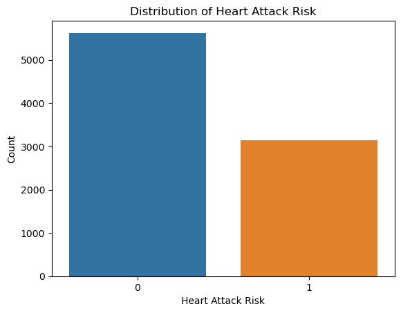
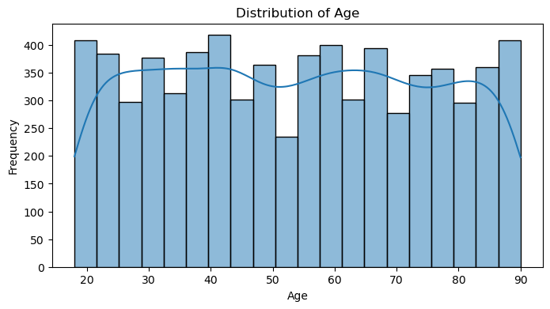
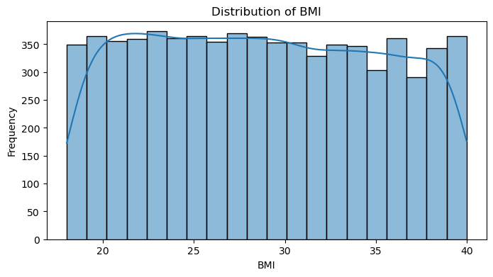
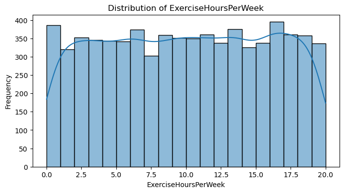
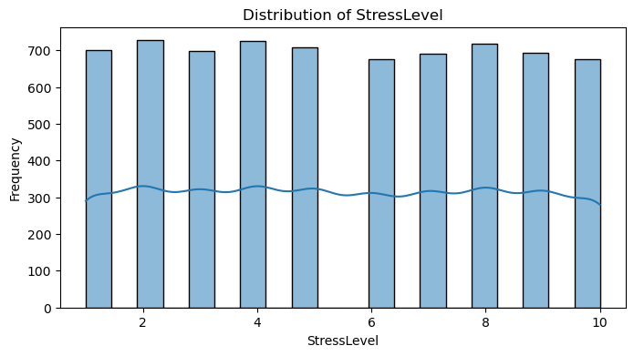
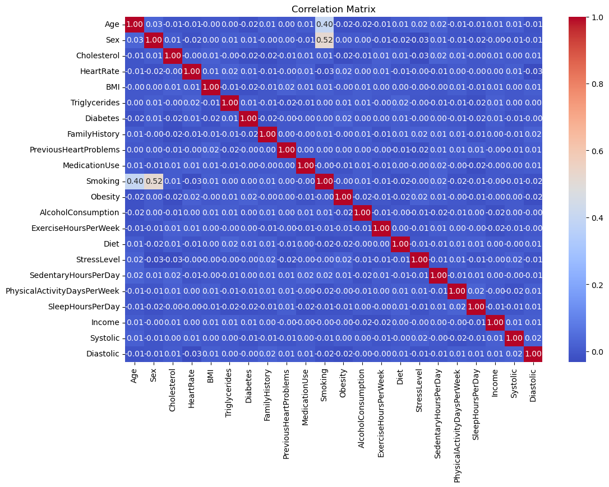
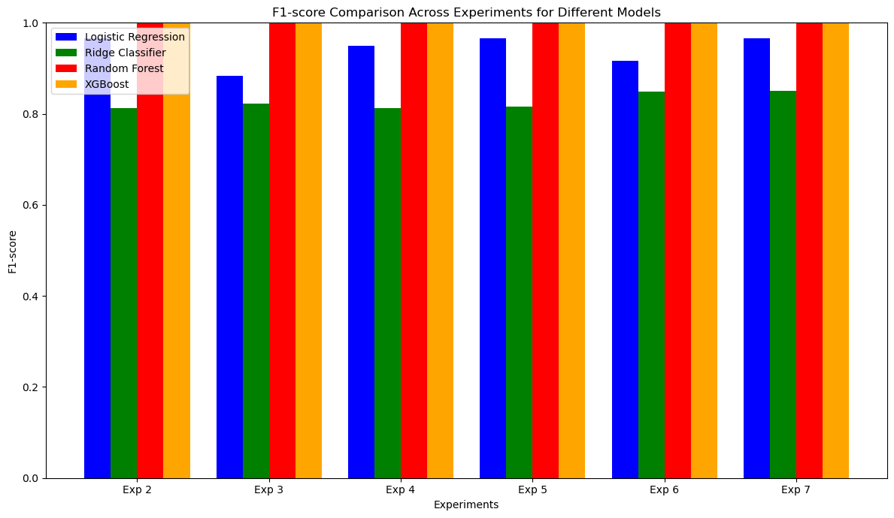

import csv
file_path = r"C:\Users\Vanu\OneDrive\Attachments\heart_attack_prediction_dataset.csv" # Full file path
# Open and reading the CSV file
with open(file_path, 'r') as file:
csv_reader = csv.reader(file)
headers = next(csv_reader) # Reading the header row
data = list(csv_reader) # Reading the rest of the rows
# first few rows to confirm successful loading
print("Headers:", headers)
print("First row:", data[0])
---------------------------------------------------------------------------
FileNotFoundError Traceback (most recent call last)
Cell In[1], line 6
3 file_path = r"C:\Users\Vanu\OneDrive\Attachments\heart_attack_prediction_dataset.csv" # Full file path
5 # Open and reading the CSV file
----> 6 with open(file_path, 'r') as file:
7 csv_reader = csv.reader(file)
8 headers = next(csv_reader) # Reading the header row
File ~\AppData\Local\Programs\Python\Python312\Lib\site-packages\IPython\core\interactiveshell.py:324, in _modified_open(file, *args, **kwargs)
317 if file in {0, 1, 2}:
318 raise ValueError(
319 f"IPython won't let you open fd={file} by default "
320 "as it is likely to crash IPython. If you know what you are doing, "
321 "you can use builtins' open."
322 )
--> 324 return io_open(file, *args, **kwargs)
FileNotFoundError: [Errno 2] No such file or directory: 'C:\\Users\\Vanu\\OneDrive\\Attachments\\heart_attack_prediction_dataset.csv'
STEP-1 CREATING A NORMALIZED DATABASE#
# Initialize normalized tables
normalized_demographics = []
normalized_health_metrics = []
normalized_lifestyle = []
normalized_risk_predictions = []
# Loop through the dataset and split into normalized tables
for row in data:
try:
# Demographics Table
normalized_demographics.append((
row[0], # PatientID
int(row[1]), # Age
row[2], # Sex
row[22], # Country
row[23], # Continent
row[24] # Hemisphere
))
# Health Metrics Table
normalized_health_metrics.append((
row[0], # PatientID
int(row[3]), # Cholesterol
row[4], # Blood Pressure
int(row[5]), # Heart Rate
float(row[18]), # BMI
int(row[19]), # Triglycerides
int(row[6]), # Diabetes
int(row[7]), # Family History
int(row[13]), # Previous Heart Problems
int(row[14]) # Medication Use
))
# Lifestyle Table
normalized_lifestyle.append((
row[0], # PatientID
int(row[8]), # Smoking
int(row[9]), # Obesity
int(row[10]), # Alcohol Consumption
float(row[11]), # Exercise Hours Per Week
row[12], # Diet
int(row[15]), # Stress Level
float(row[16]), # Sedentary Hours Per Day
int(row[20]), # Physical Activity Days Per Week
int(row[21]), # Sleep Hours Per Day
int(row[17]) # Income
))
# Risk Predictions Table
normalized_risk_predictions.append((
row[0], # PatientID
int(row[25]) # Heart Attack Risk
))
except ValueError as e:
print(f"Data formatting error for row: {row}")
print(f"Error details: {e}")
# Print sample records to verify normalization
print("Sample Demographics:", normalized_demographics[:2])
print("Sample Health Metrics:", normalized_health_metrics[:2])
print("Sample Lifestyle:", normalized_lifestyle[:2])
print("Sample Risk Predictions:", normalized_risk_predictions[:2])
Sample Demographics: [('BMW7812', 67, 'Male', 'Argentina', 'South America', 'Southern Hemisphere'), ('CZE1114', 21, 'Male', 'Canada', 'North America', 'Northern Hemisphere')]
Sample Health Metrics: [('BMW7812', 208, '158/88', 72, 31.251232725295402, 286, 0, 0, 0, 0), ('CZE1114', 389, '165/93', 98, 27.1949733519874, 235, 1, 1, 1, 0)]
Sample Lifestyle: [('BMW7812', 1, 0, 0, 4.168188835442079, 'Average', 9, 6.6150014529140595, 0, 6, 261404), ('CZE1114', 1, 1, 1, 1.8132416178634458, 'Unhealthy', 1, 4.963458839757678, 1, 7, 285768)]
Sample Risk Predictions: [('BMW7812', 0), ('CZE1114', 0)]
import sqlite3
# Connect to SQLite database
db_path = "heart_attack_project.db"
conn = sqlite3.connect(db_path)
conn.execute("PRAGMA foreign_keys = ON;") # Enable foreign key enforcement
cursor = conn.cursor()
# Create Demographics Table
cursor.execute("""
CREATE TABLE IF NOT EXISTS Demographics (
PatientID TEXT PRIMARY KEY,
Age INTEGER,
Sex TEXT,
Country TEXT,
Continent TEXT,
Hemisphere TEXT
)
""")
# Create Health Metrics Table
cursor.execute("""
CREATE TABLE IF NOT EXISTS HealthMetrics (
PatientID TEXT,
Cholesterol INTEGER,
BloodPressure TEXT,
HeartRate INTEGER,
BMI REAL,
Triglycerides INTEGER,
Diabetes INTEGER,
FamilyHistory INTEGER,
PreviousHeartProblems INTEGER,
MedicationUse INTEGER,
FOREIGN KEY (PatientID) REFERENCES Demographics (PatientID)
)
""")
# Create Lifestyle Table
cursor.execute("""
CREATE TABLE IF NOT EXISTS Lifestyle (
PatientID TEXT,
Smoking INTEGER,
Obesity INTEGER,
AlcoholConsumption INTEGER,
ExerciseHoursPerWeek REAL,
Diet TEXT,
StressLevel INTEGER,
SedentaryHoursPerDay REAL,
PhysicalActivityDaysPerWeek INTEGER,
SleepHoursPerDay INTEGER,
Income INTEGER,
FOREIGN KEY (PatientID) REFERENCES Demographics (PatientID)
)
""")
# Create Risk Predictions Table
cursor.execute("""
CREATE TABLE IF NOT EXISTS RiskPredictions (
PatientID TEXT,
HeartAttackRisk INTEGER,
FOREIGN KEY (PatientID) REFERENCES Demographics (PatientID)
)
""")
print("Tables created successfully!")
Tables created successfully!
try:
# Insert data into Demographics Table
cursor.executemany("""
INSERT INTO Demographics (PatientID, Age, Sex, Country, Continent, Hemisphere)
VALUES (?, ?, ?, ?, ?, ?)
""", normalized_demographics)
# Insert data into Health Metrics Table
cursor.executemany("""
INSERT INTO HealthMetrics (PatientID, Cholesterol, BloodPressure, HeartRate, BMI, Triglycerides,
Diabetes, FamilyHistory, PreviousHeartProblems, MedicationUse)
VALUES (?, ?, ?, ?, ?, ?, ?, ?, ?, ?)
""", normalized_health_metrics)
# Insert data into Lifestyle Table
cursor.executemany("""
INSERT INTO Lifestyle (PatientID, Smoking, Obesity, AlcoholConsumption, ExerciseHoursPerWeek, Diet,
StressLevel, SedentaryHoursPerDay, PhysicalActivityDaysPerWeek, SleepHoursPerDay, Income)
VALUES (?, ?, ?, ?, ?, ?, ?, ?, ?, ?, ?)
""", normalized_lifestyle)
# Insert data into Risk Predictions Table
cursor.executemany("""
INSERT INTO RiskPredictions (PatientID, HeartAttackRisk)
VALUES (?, ?)
""", normalized_risk_predictions)
# Commit the changes
conn.commit()
print("Data inserted into tables successfully!")
except sqlite3.IntegrityError as e:
print(f"Integrity error: {e}")
except sqlite3.Error as e:
print(f"Database error: {e}")
except Exception as e:
print(f"Unexpected error: {e}")
Data inserted into tables successfully!
# Query Demographics Table
print(cursor.execute("SELECT * FROM Demographics LIMIT 5").fetchall())
# Query Health Metrics Table
print(cursor.execute("SELECT * FROM HealthMetrics LIMIT 5").fetchall())
# Query Lifestyle Table
print(cursor.execute("SELECT * FROM Lifestyle LIMIT 5").fetchall())
# Query Risk Predictions Table
print(cursor.execute("SELECT * FROM RiskPredictions LIMIT 5").fetchall())
[('BMW7812', 67, 'Male', 'Argentina', 'South America', 'Southern Hemisphere'), ('CZE1114', 21, 'Male', 'Canada', 'North America', 'Northern Hemisphere'), ('BNI9906', 21, 'Female', 'France', 'Europe', 'Northern Hemisphere'), ('JLN3497', 84, 'Male', 'Canada', 'North America', 'Northern Hemisphere'), ('GFO8847', 66, 'Male', 'Thailand', 'Asia', 'Northern Hemisphere')]
[('BMW7812', 208, '158/88', 72, 31.251232725295402, 286, 0, 0, 0, 0), ('CZE1114', 389, '165/93', 98, 27.1949733519874, 235, 1, 1, 1, 0), ('BNI9906', 324, '174/99', 72, 28.176570683909873, 587, 1, 0, 1, 1), ('JLN3497', 383, '163/100', 73, 36.464704293082846, 378, 1, 1, 1, 0), ('GFO8847', 318, '91/88', 93, 21.809144180619754, 231, 1, 1, 1, 0)]
[('BMW7812', 1, 0, 0, 4.168188835442079, 'Average', 9, 6.6150014529140595, 0, 6, 261404), ('CZE1114', 1, 1, 1, 1.8132416178634458, 'Unhealthy', 1, 4.963458839757678, 1, 7, 285768), ('BNI9906', 0, 0, 0, 2.0783529861178884, 'Healthy', 9, 9.463425838029828, 4, 4, 235282), ('JLN3497', 1, 0, 1, 9.82812959348533, 'Average', 9, 7.648980824461007, 3, 4, 125640), ('GFO8847', 1, 1, 0, 5.804298820315434, 'Unhealthy', 6, 1.5148209264291386, 1, 5, 160555)]
[('BMW7812', 0), ('CZE1114', 0), ('BNI9906', 0), ('JLN3497', 0), ('GFO8847', 0)]
STEP-2 SQL join statement to fetch data from the database and into Pandas DataFrame.#
pip install pandas
Requirement already satisfied: pandas in c:\users\vanu\anaconda3\lib\site-packages (2.0.3)
Requirement already satisfied: python-dateutil>=2.8.2 in c:\users\vanu\anaconda3\lib\site-packages (from pandas) (2.8.2)
Requirement already satisfied: pytz>=2020.1 in c:\users\vanu\anaconda3\lib\site-packages (from pandas) (2023.3.post1)
Requirement already satisfied: tzdata>=2022.1 in c:\users\vanu\anaconda3\lib\site-packages (from pandas) (2023.3)
Requirement already satisfied: numpy>=1.21.0 in c:\users\vanu\anaconda3\lib\site-packages (from pandas) (1.24.3)
Requirement already satisfied: six>=1.5 in c:\users\vanu\anaconda3\lib\site-packages (from python-dateutil>=2.8.2->pandas) (1.16.0)
Note: you may need to restart the kernel to use updated packages.
import sqlite3
import pandas as pd
# Step 1: Define the SQLite database path
db_path = "heart_attack_project.db" # Path to your SQLite database file
# Step 2: Define the SQL join query
query = """
SELECT
d.PatientID, d.Age, d.Sex, d.Country, d.Continent, d.Hemisphere,
hm.Cholesterol, hm.BloodPressure, hm.HeartRate, hm.BMI, hm.Triglycerides,
hm.Diabetes, hm.FamilyHistory, hm.PreviousHeartProblems, hm.MedicationUse,
l.Smoking, l.Obesity, l.AlcoholConsumption, l.ExerciseHoursPerWeek, l.Diet,
l.StressLevel, l.SedentaryHoursPerDay, l.PhysicalActivityDaysPerWeek,
l.SleepHoursPerDay, l.Income, rp.HeartAttackRisk
FROM Demographics d
JOIN HealthMetrics hm ON d.PatientID = hm.PatientID
JOIN Lifestyle l ON d.PatientID = l.PatientID
JOIN RiskPredictions rp ON d.PatientID = rp.PatientID
"""
# Step 3: Connect to the database and fetch data
try:
# Connect to the SQLite database
conn = sqlite3.connect(db_path)
print("Database connected successfully!")
# Execute the query and load the data into a Pandas DataFrame
df = pd.read_sql_query(query, conn)
# Display the first few rows of the DataFrame
print("Sample DataFrame:")
print(df.head())
# Display additional information about the DataFrame
print("\nDataFrame Info:")
print(df.info())
# Display basic statistics for numeric columns
print("\nDataFrame Description:")
print(df.describe())
except sqlite3.Error as e:
print(f"Database error: {e}")
except Exception as e:
print(f"Unexpected error: {e}")
finally:
# Ensure the connection is closed
conn.close()
print("Database connection closed.")
Database connected successfully!
Sample DataFrame:
PatientID Age Sex Country Continent Hemisphere \
0 BMW7812 67 Male Argentina South America Southern Hemisphere
1 CZE1114 21 Male Canada North America Northern Hemisphere
2 BNI9906 21 Female France Europe Northern Hemisphere
3 JLN3497 84 Male Canada North America Northern Hemisphere
4 GFO8847 66 Male Thailand Asia Northern Hemisphere
Cholesterol BloodPressure HeartRate BMI ... Obesity \
0 208 158/88 72 31.251233 ... 0
1 389 165/93 98 27.194973 ... 1
2 324 174/99 72 28.176571 ... 0
3 383 163/100 73 36.464704 ... 0
4 318 91/88 93 21.809144 ... 1
AlcoholConsumption ExerciseHoursPerWeek Diet StressLevel \
0 0 4.168189 Average 9
1 1 1.813242 Unhealthy 1
2 0 2.078353 Healthy 9
3 1 9.828130 Average 9
4 0 5.804299 Unhealthy 6
SedentaryHoursPerDay PhysicalActivityDaysPerWeek SleepHoursPerDay \
0 6.615001 0 6
1 4.963459 1 7
2 9.463426 4 4
3 7.648981 3 4
4 1.514821 1 5
Income HeartAttackRisk
0 261404 0
1 285768 0
2 235282 0
3 125640 0
4 160555 0
[5 rows x 26 columns]
DataFrame Info:
<class 'pandas.core.frame.DataFrame'>
RangeIndex: 8763 entries, 0 to 8762
Data columns (total 26 columns):
# Column Non-Null Count Dtype
--- ------ -------------- -----
0 PatientID 8763 non-null object
1 Age 8763 non-null int64
2 Sex 8763 non-null object
3 Country 8763 non-null object
4 Continent 8763 non-null object
5 Hemisphere 8763 non-null object
6 Cholesterol 8763 non-null int64
7 BloodPressure 8763 non-null object
8 HeartRate 8763 non-null int64
9 BMI 8763 non-null float64
10 Triglycerides 8763 non-null int64
11 Diabetes 8763 non-null int64
12 FamilyHistory 8763 non-null int64
13 PreviousHeartProblems 8763 non-null int64
14 MedicationUse 8763 non-null int64
15 Smoking 8763 non-null int64
16 Obesity 8763 non-null int64
17 AlcoholConsumption 8763 non-null int64
18 ExerciseHoursPerWeek 8763 non-null float64
19 Diet 8763 non-null object
20 StressLevel 8763 non-null int64
21 SedentaryHoursPerDay 8763 non-null float64
22 PhysicalActivityDaysPerWeek 8763 non-null int64
23 SleepHoursPerDay 8763 non-null int64
24 Income 8763 non-null int64
25 HeartAttackRisk 8763 non-null int64
dtypes: float64(3), int64(16), object(7)
memory usage: 1.7+ MB
None
DataFrame Description:
Age Cholesterol HeartRate BMI Triglycerides \
count 8763.000000 8763.000000 8763.000000 8763.000000 8763.000000
mean 53.707977 259.877211 75.021682 28.891446 417.677051
std 21.249509 80.863276 20.550948 6.319181 223.748137
min 18.000000 120.000000 40.000000 18.002337 30.000000
25% 35.000000 192.000000 57.000000 23.422985 225.500000
50% 54.000000 259.000000 75.000000 28.768999 417.000000
75% 72.000000 330.000000 93.000000 34.324594 612.000000
max 90.000000 400.000000 110.000000 39.997211 800.000000
Diabetes FamilyHistory PreviousHeartProblems MedicationUse \
count 8763.000000 8763.000000 8763.000000 8763.000000
mean 0.652288 0.492982 0.495835 0.498345
std 0.476271 0.499979 0.500011 0.500026
min 0.000000 0.000000 0.000000 0.000000
25% 0.000000 0.000000 0.000000 0.000000
50% 1.000000 0.000000 0.000000 0.000000
75% 1.000000 1.000000 1.000000 1.000000
max 1.000000 1.000000 1.000000 1.000000
Smoking Obesity AlcoholConsumption ExerciseHoursPerWeek \
count 8763.000000 8763.000000 8763.000000 8763.000000
mean 0.896839 0.501426 0.598083 10.014284
std 0.304186 0.500026 0.490313 5.783745
min 0.000000 0.000000 0.000000 0.002442
25% 1.000000 0.000000 0.000000 4.981579
50% 1.000000 1.000000 1.000000 10.069559
75% 1.000000 1.000000 1.000000 15.050018
max 1.000000 1.000000 1.000000 19.998709
StressLevel SedentaryHoursPerDay PhysicalActivityDaysPerWeek \
count 8763.000000 8763.000000 8763.000000
mean 5.469702 5.993690 3.489672
std 2.859622 3.466359 2.282687
min 1.000000 0.001263 0.000000
25% 3.000000 2.998794 2.000000
50% 5.000000 5.933622 3.000000
75% 8.000000 9.019124 5.000000
max 10.000000 11.999313 7.000000
SleepHoursPerDay Income HeartAttackRisk
count 8763.000000 8763.000000 8763.000000
mean 7.023508 158263.181901 0.358211
std 1.988473 80575.190806 0.479502
min 4.000000 20062.000000 0.000000
25% 5.000000 88310.000000 0.000000
50% 7.000000 157866.000000 0.000000
75% 9.000000 227749.000000 1.000000
max 10.000000 299954.000000 1.000000
Database connection closed.
STEP-3 EXPLORING THE DATA#
# Check the distribution of Heart Attack Risk
risk_distribution = df['HeartAttackRisk'].value_counts(normalize=True) * 100
print("Heart Attack Risk Distribution (%):")
print(risk_distribution)
Heart Attack Risk Distribution (%):
HeartAttackRisk
0 64.178934
1 35.821066
Name: proportion, dtype: float64
pip install seaborn
Requirement already satisfied: seaborn in c:\users\vanu\anaconda3\lib\site-packages (0.12.2)
Requirement already satisfied: numpy!=1.24.0,>=1.17 in c:\users\vanu\anaconda3\lib\site-packages (from seaborn) (1.24.3)
Requirement already satisfied: pandas>=0.25 in c:\users\vanu\anaconda3\lib\site-packages (from seaborn) (2.0.3)
Requirement already satisfied: matplotlib!=3.6.1,>=3.1 in c:\users\vanu\anaconda3\lib\site-packages (from seaborn) (3.7.2)
Requirement already satisfied: contourpy>=1.0.1 in c:\users\vanu\anaconda3\lib\site-packages (from matplotlib!=3.6.1,>=3.1->seaborn) (1.0.5)
Requirement already satisfied: cycler>=0.10 in c:\users\vanu\anaconda3\lib\site-packages (from matplotlib!=3.6.1,>=3.1->seaborn) (0.11.0)
Requirement already satisfied: fonttools>=4.22.0 in c:\users\vanu\anaconda3\lib\site-packages (from matplotlib!=3.6.1,>=3.1->seaborn) (4.25.0)
Requirement already satisfied: kiwisolver>=1.0.1 in c:\users\vanu\anaconda3\lib\site-packages (from matplotlib!=3.6.1,>=3.1->seaborn) (1.4.4)
Requirement already satisfied: packaging>=20.0 in c:\users\vanu\anaconda3\lib\site-packages (from matplotlib!=3.6.1,>=3.1->seaborn) (23.1)
Requirement already satisfied: pillow>=6.2.0 in c:\users\vanu\anaconda3\lib\site-packages (from matplotlib!=3.6.1,>=3.1->seaborn) (9.4.0)
Requirement already satisfied: pyparsing<3.1,>=2.3.1 in c:\users\vanu\anaconda3\lib\site-packages (from matplotlib!=3.6.1,>=3.1->seaborn) (3.0.9)
Requirement already satisfied: python-dateutil>=2.7 in c:\users\vanu\anaconda3\lib\site-packages (from matplotlib!=3.6.1,>=3.1->seaborn) (2.8.2)
Requirement already satisfied: pytz>=2020.1 in c:\users\vanu\anaconda3\lib\site-packages (from pandas>=0.25->seaborn) (2023.3.post1)
Requirement already satisfied: tzdata>=2022.1 in c:\users\vanu\anaconda3\lib\site-packages (from pandas>=0.25->seaborn) (2023.3)
Requirement already satisfied: six>=1.5 in c:\users\vanu\anaconda3\lib\site-packages (from python-dateutil>=2.7->matplotlib!=3.6.1,>=3.1->seaborn) (1.16.0)
Note: you may need to restart the kernel to use updated packages.
import seaborn as sns
import matplotlib.pyplot as plt
# Plot distribution of Heart Attack Risk
sns.countplot(x='HeartAttackRisk', data=df)
plt.title("Distribution of Heart Attack Risk")
plt.xlabel("Heart Attack Risk")
plt.ylabel("Count")
plt.show()

# Check basic statistics for Age and BMI
print("\nStatistics for Age and BMI:")
print(df[['Age', 'BMI']].describe())
# Plot distribution of Age
sns.histplot(df['Age'], kde=True, bins=20)
plt.title("Distribution of Age")
plt.xlabel("Age")
plt.show()
# Plot distribution of BMI
sns.histplot(df['BMI'], kde=True, bins=20)
plt.title("Distribution of BMI")
plt.xlabel("BMI")
plt.show()
Statistics for Age and BMI:
Age BMI
count 8763.000000 8763.000000
mean 53.707977 28.891446
std 21.249509 6.319181
min 18.000000 18.002337
25% 35.000000 23.422985
50% 54.000000 28.768999
75% 72.000000 34.324594
max 90.000000 39.997211
!pip install scikit-learn
Requirement already satisfied: scikit-learn in c:\users\vanu\anaconda3\lib\site-packages (1.3.0)
Requirement already satisfied: numpy>=1.17.3 in c:\users\vanu\anaconda3\lib\site-packages (from scikit-learn) (1.24.3)
Requirement already satisfied: scipy>=1.5.0 in c:\users\vanu\anaconda3\lib\site-packages (from scikit-learn) (1.11.1)
Requirement already satisfied: joblib>=1.1.1 in c:\users\vanu\anaconda3\lib\site-packages (from scikit-learn) (1.2.0)
Requirement already satisfied: threadpoolctl>=2.0.0 in c:\users\vanu\anaconda3\lib\site-packages (from scikit-learn) (2.2.0)
from sklearn.model_selection import train_test_split
# Features and target variable
X = df.drop(['PatientID', 'HeartAttackRisk'], axis=1) # Drop ID and target from features
y = df['HeartAttackRisk'] # Target variable
# Train/test split with stratification
X_train, X_test, y_train, y_test = train_test_split(X, y, test_size=0.2, stratify=y, random_state=42)
# Check the distribution in training and testing sets
print("\nDistribution in Training Set:")
print(y_train.value_counts(normalize=True) * 100)
print("\nDistribution in Testing Set:")
print(y_test.value_counts(normalize=True) * 100)
Distribution in Training Set:
HeartAttackRisk
0 64.179743
1 35.820257
Name: proportion, dtype: float64
Distribution in Testing Set:
HeartAttackRisk
0 64.175699
1 35.824301
Name: proportion, dtype: float64
STEP-4 Exploring the data using yprofile and correlation matrix. Make observations about features, distributions, capped values, and missing values. Create a list of data cleanup tasks.#
# Summary statistics for numerical features
print("Summary Statistics:")
print(X_train.describe())
# Check for missing values
print("\nMissing Values in Training Set:")
print(X_train.isnull().sum())
Summary Statistics:
Age Cholesterol HeartRate BMI Triglycerides \
count 7010.000000 7010.000000 7010.000000 7010.000000 7010.000000
mean 53.640371 260.376890 75.045221 28.829208 416.049786
std 21.180466 81.048115 20.601383 6.326492 222.679709
min 18.000000 120.000000 40.000000 18.004211 30.000000
25% 35.000000 192.000000 57.000000 23.348256 225.000000
50% 54.000000 259.000000 75.000000 28.708215 414.000000
75% 72.000000 331.000000 93.000000 34.213909 607.000000
max 90.000000 400.000000 110.000000 39.997211 800.000000
Diabetes FamilyHistory PreviousHeartProblems MedicationUse \
count 7010.000000 7010.000000 7010.000000 7010.000000
mean 0.647218 0.493581 0.496006 0.494579
std 0.477870 0.499994 0.500020 0.500006
min 0.000000 0.000000 0.000000 0.000000
25% 0.000000 0.000000 0.000000 0.000000
50% 1.000000 0.000000 0.000000 0.000000
75% 1.000000 1.000000 1.000000 1.000000
max 1.000000 1.000000 1.000000 1.000000
Smoking Obesity AlcoholConsumption ExerciseHoursPerWeek \
count 7010.000000 7010.000000 7010.000000 7010.000000
mean 0.895720 0.502425 0.593723 10.028048
std 0.305645 0.500030 0.491172 5.792450
min 0.000000 0.000000 0.000000 0.004443
25% 1.000000 0.000000 0.000000 5.022926
50% 1.000000 1.000000 1.000000 10.077734
75% 1.000000 1.000000 1.000000 15.092389
max 1.000000 1.000000 1.000000 19.990822
StressLevel SedentaryHoursPerDay PhysicalActivityDaysPerWeek \
count 7010.000000 7010.000000 7010.000000
mean 5.465050 6.022300 3.497575
std 2.867003 3.468821 2.299096
min 1.000000 0.001263 0.000000
25% 3.000000 3.027409 1.000000
50% 5.000000 5.980585 3.000000
75% 8.000000 9.040422 6.000000
max 10.000000 11.999313 7.000000
SleepHoursPerDay Income
count 7010.000000 7010.000000
mean 7.001141 157964.185592
std 1.989127 81015.051045
min 4.000000 20162.000000
25% 5.000000 86993.500000
50% 7.000000 157918.500000
75% 9.000000 228703.750000
max 10.000000 299954.000000
Missing Values in Training Set:
Age 0
Sex 0
Country 0
Continent 0
Hemisphere 0
Cholesterol 0
BloodPressure 0
HeartRate 0
BMI 0
Triglycerides 0
Diabetes 0
FamilyHistory 0
PreviousHeartProblems 0
MedicationUse 0
Smoking 0
Obesity 0
AlcoholConsumption 0
ExerciseHoursPerWeek 0
Diet 0
StressLevel 0
SedentaryHoursPerDay 0
PhysicalActivityDaysPerWeek 0
SleepHoursPerDay 0
Income 0
dtype: int64
import seaborn as sns
import matplotlib.pyplot as plt
# Plot distribution of selected features
features_to_plot = ['Age', 'BMI', 'ExerciseHoursPerWeek', 'StressLevel']
for feature in features_to_plot:
plt.figure(figsize=(8, 4))
sns.histplot(X_train[feature], kde=True, bins=20)
plt.title(f"Distribution of {feature}")
plt.xlabel(feature)
plt.ylabel("Frequency")
plt.show()




from sklearn.preprocessing import LabelEncoder
# Columns to encode
encoder = LabelEncoder()
X_train['Sex'] = encoder.fit_transform(X_train['Sex']) # Male/Female -> 1/0
X_train['Diet'] = encoder.fit_transform(X_train['Diet']) # Healthy/Average -> 1/0
print(X_train.columns)
Index(['Age', 'Sex', 'Country', 'Continent', 'Hemisphere', 'Cholesterol',
'HeartRate', 'BMI', 'Triglycerides', 'Diabetes', 'FamilyHistory',
'PreviousHeartProblems', 'MedicationUse', 'Smoking', 'Obesity',
'AlcoholConsumption', 'ExerciseHoursPerWeek', 'Diet', 'StressLevel',
'SedentaryHoursPerDay', 'PhysicalActivityDaysPerWeek',
'SleepHoursPerDay', 'Income', 'Systolic', 'Diastolic'],
dtype='object')
# Select numeric features from X_train
X_train_numeric = X_train.select_dtypes(include=['float64', 'int64'])
# Compute the correlation matrix
correlation_matrix = X_train_numeric.corr()
# Plot the correlation matrix
import seaborn as sns
import matplotlib.pyplot as plt
plt.figure(figsize=(12, 8))
sns.heatmap(correlation_matrix, annot=True, fmt=".2f", cmap="coolwarm")
plt.title("Correlation Matrix")
plt.show()

The correlation matrix reveals notable trends, such as a moderate positive correlation between Sex and Smoking (0.52), suggesting gender-based smoking habits, and a negative correlation between Smoking and Age (-0.40), indicating younger individuals are more likely to smoke. Features like Systolic and Diastolic blood pressure show expected correlations, while attributes such as Cholesterol, HeartRate, and ExerciseHoursPerWeek exhibit very weak correlations with other features, suggesting limited influence. Continuous features like Age, BMI, Income, and SedentaryHoursPerDay show varied ranges and potential outliers (e.g., capped values for ExerciseHoursPerWeek around 20). While the dataset has no missing values, scaling and normalization are necessary for numerical features, and redundant features like Sex and Smoking require furtherinvestigation to assess their impact. Additionally, extreme values in Triglycerides and SedentaryHours should be explored, and low-impact features may be considered for removal to streamline the model.#
print(X_train['ExerciseHoursPerWeek'].describe())
count 7010.000000
mean 10.028048
std 5.792450
min 0.004443
25% 5.022926
50% 10.077734
75% 15.092389
max 19.990822
Name: ExerciseHoursPerWeek, dtype: float64
cleanup_tasks = [
"Handle outliers in ExerciseHoursPerWeek (e.g., capped values at 20).",
"Remove redundant features like highly correlated ones (e.g., if identified in the heatmap).",
"Encode categorical variables (`Sex`, `Diet`).",
"Scale numerical features for better model performance (e.g., Age, BMI, etc.)."
]
print("\nData Cleanup Tasks:")
for task in cleanup_tasks:
print("-", task)
Data Cleanup Tasks:
- Handle outliers in ExerciseHoursPerWeek (e.g., capped values at 20).
- Remove redundant features like highly correlated ones (e.g., if identified in the heatmap).
- Encode categorical variables (`Sex`, `Diet`).
- Scale numerical features for better model performance (e.g., Age, BMI, etc.).
STEP-5 EXP-1 calculating f-score,(TP,TN,FN,FP)in MLFlow on DagsHub#
pip install scikit-learn mlflow dagshub
Requirement already satisfied: scikit-learn in c:\users\vanu\anaconda3\lib\site-packages (1.3.0)
Requirement already satisfied: mlflow in c:\users\vanu\anaconda3\lib\site-packages (2.19.0)
Requirement already satisfied: dagshub in c:\users\vanu\anaconda3\lib\site-packages (0.4.0)
Requirement already satisfied: numpy>=1.17.3 in c:\users\vanu\anaconda3\lib\site-packages (from scikit-learn) (1.24.3)
Requirement already satisfied: scipy>=1.5.0 in c:\users\vanu\anaconda3\lib\site-packages (from scikit-learn) (1.11.1)
Requirement already satisfied: joblib>=1.1.1 in c:\users\vanu\anaconda3\lib\site-packages (from scikit-learn) (1.2.0)
Requirement already satisfied: threadpoolctl>=2.0.0 in c:\users\vanu\anaconda3\lib\site-packages (from scikit-learn) (2.2.0)
Requirement already satisfied: mlflow-skinny==2.19.0 in c:\users\vanu\anaconda3\lib\site-packages (from mlflow) (2.19.0)
Requirement already satisfied: Flask<4 in c:\users\vanu\anaconda3\lib\site-packages (from mlflow) (2.2.2)
Requirement already satisfied: Jinja2<4,>=3.0 in c:\users\vanu\anaconda3\lib\site-packages (from mlflow) (3.1.2)
Requirement already satisfied: alembic!=1.10.0,<2 in c:\users\vanu\anaconda3\lib\site-packages (from mlflow) (1.14.0)
Requirement already satisfied: docker<8,>=4.0.0 in c:\users\vanu\anaconda3\lib\site-packages (from mlflow) (7.1.0)
Requirement already satisfied: graphene<4 in c:\users\vanu\anaconda3\lib\site-packages (from mlflow) (3.4.3)
Requirement already satisfied: markdown<4,>=3.3 in c:\users\vanu\anaconda3\lib\site-packages (from mlflow) (3.4.1)
Requirement already satisfied: matplotlib<4 in c:\users\vanu\anaconda3\lib\site-packages (from mlflow) (3.7.2)
Requirement already satisfied: pandas<3 in c:\users\vanu\anaconda3\lib\site-packages (from mlflow) (2.0.3)
Requirement already satisfied: pyarrow<19,>=4.0.0 in c:\users\vanu\anaconda3\lib\site-packages (from mlflow) (11.0.0)
Requirement already satisfied: sqlalchemy<3,>=1.4.0 in c:\users\vanu\anaconda3\lib\site-packages (from mlflow) (1.4.39)
Requirement already satisfied: waitress<4 in c:\users\vanu\anaconda3\lib\site-packages (from mlflow) (3.0.2)
Requirement already satisfied: cachetools<6,>=5.0.0 in c:\users\vanu\anaconda3\lib\site-packages (from mlflow-skinny==2.19.0->mlflow) (5.5.0)
Requirement already satisfied: click<9,>=7.0 in c:\users\vanu\anaconda3\lib\site-packages (from mlflow-skinny==2.19.0->mlflow) (8.0.4)
Requirement already satisfied: cloudpickle<4 in c:\users\vanu\anaconda3\lib\site-packages (from mlflow-skinny==2.19.0->mlflow) (2.2.1)
Requirement already satisfied: databricks-sdk<1,>=0.20.0 in c:\users\vanu\anaconda3\lib\site-packages (from mlflow-skinny==2.19.0->mlflow) (0.40.0)
Requirement already satisfied: gitpython<4,>=3.1.9 in c:\users\vanu\anaconda3\lib\site-packages (from mlflow-skinny==2.19.0->mlflow) (3.1.43)
Requirement already satisfied: importlib_metadata!=4.7.0,<9,>=3.7.0 in c:\users\vanu\anaconda3\lib\site-packages (from mlflow-skinny==2.19.0->mlflow) (6.0.0)
Requirement already satisfied: opentelemetry-api<3,>=1.9.0 in c:\users\vanu\anaconda3\lib\site-packages (from mlflow-skinny==2.19.0->mlflow) (1.29.0)
Requirement already satisfied: opentelemetry-sdk<3,>=1.9.0 in c:\users\vanu\anaconda3\lib\site-packages (from mlflow-skinny==2.19.0->mlflow) (1.29.0)
Requirement already satisfied: packaging<25 in c:\users\vanu\anaconda3\lib\site-packages (from mlflow-skinny==2.19.0->mlflow) (23.1)
Requirement already satisfied: protobuf<6,>=3.12.0 in c:\users\vanu\anaconda3\lib\site-packages (from mlflow-skinny==2.19.0->mlflow) (5.29.2)
Requirement already satisfied: pyyaml<7,>=5.1 in c:\users\vanu\anaconda3\lib\site-packages (from mlflow-skinny==2.19.0->mlflow) (6.0)
Requirement already satisfied: requests<3,>=2.17.3 in c:\users\vanu\anaconda3\lib\site-packages (from mlflow-skinny==2.19.0->mlflow) (2.31.0)
Requirement already satisfied: sqlparse<1,>=0.4.0 in c:\users\vanu\anaconda3\lib\site-packages (from mlflow-skinny==2.19.0->mlflow) (0.5.3)
Requirement already satisfied: appdirs>=1.4.4 in c:\users\vanu\anaconda3\lib\site-packages (from dagshub) (1.4.4)
Requirement already satisfied: httpx>=0.23.0 in c:\users\vanu\anaconda3\lib\site-packages (from dagshub) (0.28.1)
Requirement already satisfied: rich>=13.1.0 in c:\users\vanu\anaconda3\lib\site-packages (from dagshub) (13.9.4)
Requirement already satisfied: dacite~=1.6.0 in c:\users\vanu\anaconda3\lib\site-packages (from dagshub) (1.6.0)
Requirement already satisfied: tenacity>=8.2.2 in c:\users\vanu\anaconda3\lib\site-packages (from dagshub) (8.2.2)
Requirement already satisfied: gql[requests] in c:\users\vanu\anaconda3\lib\site-packages (from dagshub) (3.5.0)
Requirement already satisfied: dataclasses-json in c:\users\vanu\anaconda3\lib\site-packages (from dagshub) (0.6.7)
Requirement already satisfied: treelib>=1.6.4 in c:\users\vanu\anaconda3\lib\site-packages (from dagshub) (1.7.0)
Requirement already satisfied: pathvalidate>=3.0.0 in c:\users\vanu\anaconda3\lib\site-packages (from dagshub) (3.2.1)
Requirement already satisfied: python-dateutil in c:\users\vanu\anaconda3\lib\site-packages (from dagshub) (2.8.2)
Requirement already satisfied: boto3 in c:\users\vanu\anaconda3\lib\site-packages (from dagshub) (1.35.85)
Requirement already satisfied: dagshub-annotation-converter>=0.1.0 in c:\users\vanu\anaconda3\lib\site-packages (from dagshub) (0.1.2)
Requirement already satisfied: Mako in c:\users\vanu\anaconda3\lib\site-packages (from alembic!=1.10.0,<2->mlflow) (1.3.8)
Requirement already satisfied: typing-extensions>=4 in c:\users\vanu\anaconda3\lib\site-packages (from alembic!=1.10.0,<2->mlflow) (4.12.2)
Requirement already satisfied: colorama in c:\users\vanu\anaconda3\lib\site-packages (from click<9,>=7.0->mlflow-skinny==2.19.0->mlflow) (0.4.6)
Requirement already satisfied: lxml in c:\users\vanu\anaconda3\lib\site-packages (from dagshub-annotation-converter>=0.1.0->dagshub) (4.9.3)
Requirement already satisfied: pillow in c:\users\vanu\anaconda3\lib\site-packages (from dagshub-annotation-converter>=0.1.0->dagshub) (9.4.0)
Requirement already satisfied: pydantic>=2.0.0 in c:\users\vanu\anaconda3\lib\site-packages (from dagshub-annotation-converter>=0.1.0->dagshub) (2.10.4)
Requirement already satisfied: pywin32>=304 in c:\users\vanu\anaconda3\lib\site-packages (from docker<8,>=4.0.0->mlflow) (305.1)
Requirement already satisfied: urllib3>=1.26.0 in c:\users\vanu\anaconda3\lib\site-packages (from docker<8,>=4.0.0->mlflow) (1.26.16)
Requirement already satisfied: Werkzeug>=2.2.2 in c:\users\vanu\anaconda3\lib\site-packages (from Flask<4->mlflow) (2.2.3)
Requirement already satisfied: itsdangerous>=2.0 in c:\users\vanu\anaconda3\lib\site-packages (from Flask<4->mlflow) (2.0.1)
Requirement already satisfied: gitdb<5,>=4.0.1 in c:\users\vanu\anaconda3\lib\site-packages (from gitpython<4,>=3.1.9->mlflow-skinny==2.19.0->mlflow) (4.0.11)
Requirement already satisfied: graphql-core<3.3,>=3.1 in c:\users\vanu\anaconda3\lib\site-packages (from graphene<4->mlflow) (3.2.5)
Requirement already satisfied: graphql-relay<3.3,>=3.1 in c:\users\vanu\anaconda3\lib\site-packages (from graphene<4->mlflow) (3.2.0)
Requirement already satisfied: anyio in c:\users\vanu\anaconda3\lib\site-packages (from httpx>=0.23.0->dagshub) (3.5.0)
Requirement already satisfied: certifi in c:\users\vanu\anaconda3\lib\site-packages (from httpx>=0.23.0->dagshub) (2023.7.22)
Requirement already satisfied: httpcore==1.* in c:\users\vanu\anaconda3\lib\site-packages (from httpx>=0.23.0->dagshub) (1.0.7)
Requirement already satisfied: idna in c:\users\vanu\anaconda3\lib\site-packages (from httpx>=0.23.0->dagshub) (3.4)
Requirement already satisfied: h11<0.15,>=0.13 in c:\users\vanu\anaconda3\lib\site-packages (from httpcore==1.*->httpx>=0.23.0->dagshub) (0.14.0)
Requirement already satisfied: MarkupSafe>=2.0 in c:\users\vanu\anaconda3\lib\site-packages (from Jinja2<4,>=3.0->mlflow) (2.1.1)
Requirement already satisfied: contourpy>=1.0.1 in c:\users\vanu\anaconda3\lib\site-packages (from matplotlib<4->mlflow) (1.0.5)
Requirement already satisfied: cycler>=0.10 in c:\users\vanu\anaconda3\lib\site-packages (from matplotlib<4->mlflow) (0.11.0)
Requirement already satisfied: fonttools>=4.22.0 in c:\users\vanu\anaconda3\lib\site-packages (from matplotlib<4->mlflow) (4.25.0)
Requirement already satisfied: kiwisolver>=1.0.1 in c:\users\vanu\anaconda3\lib\site-packages (from matplotlib<4->mlflow) (1.4.4)
Requirement already satisfied: pyparsing<3.1,>=2.3.1 in c:\users\vanu\anaconda3\lib\site-packages (from matplotlib<4->mlflow) (3.0.9)
Requirement already satisfied: pytz>=2020.1 in c:\users\vanu\anaconda3\lib\site-packages (from pandas<3->mlflow) (2023.3.post1)
Requirement already satisfied: tzdata>=2022.1 in c:\users\vanu\anaconda3\lib\site-packages (from pandas<3->mlflow) (2023.3)
Requirement already satisfied: six>=1.5 in c:\users\vanu\anaconda3\lib\site-packages (from python-dateutil->dagshub) (1.16.0)
Requirement already satisfied: markdown-it-py>=2.2.0 in c:\users\vanu\anaconda3\lib\site-packages (from rich>=13.1.0->dagshub) (2.2.0)
Requirement already satisfied: pygments<3.0.0,>=2.13.0 in c:\users\vanu\anaconda3\lib\site-packages (from rich>=13.1.0->dagshub) (2.15.1)
Requirement already satisfied: greenlet!=0.4.17 in c:\users\vanu\anaconda3\lib\site-packages (from sqlalchemy<3,>=1.4.0->mlflow) (2.0.1)
Requirement already satisfied: botocore<1.36.0,>=1.35.85 in c:\users\vanu\anaconda3\lib\site-packages (from boto3->dagshub) (1.35.85)
Requirement already satisfied: jmespath<2.0.0,>=0.7.1 in c:\users\vanu\anaconda3\lib\site-packages (from boto3->dagshub) (0.10.0)
Requirement already satisfied: s3transfer<0.11.0,>=0.10.0 in c:\users\vanu\anaconda3\lib\site-packages (from boto3->dagshub) (0.10.4)
Requirement already satisfied: marshmallow<4.0.0,>=3.18.0 in c:\users\vanu\anaconda3\lib\site-packages (from dataclasses-json->dagshub) (3.23.2)
Requirement already satisfied: typing-inspect<1,>=0.4.0 in c:\users\vanu\anaconda3\lib\site-packages (from dataclasses-json->dagshub) (0.9.0)
Requirement already satisfied: yarl<2.0,>=1.6 in c:\users\vanu\anaconda3\lib\site-packages (from gql[requests]->dagshub) (1.8.1)
Requirement already satisfied: backoff<3.0,>=1.11.1 in c:\users\vanu\anaconda3\lib\site-packages (from gql[requests]->dagshub) (2.2.1)
Requirement already satisfied: requests-toolbelt<2,>=1.0.0 in c:\users\vanu\anaconda3\lib\site-packages (from gql[requests]->dagshub) (1.0.0)
Requirement already satisfied: sniffio>=1.1 in c:\users\vanu\anaconda3\lib\site-packages (from anyio->httpx>=0.23.0->dagshub) (1.2.0)
Requirement already satisfied: google-auth~=2.0 in c:\users\vanu\anaconda3\lib\site-packages (from databricks-sdk<1,>=0.20.0->mlflow-skinny==2.19.0->mlflow) (2.37.0)
Requirement already satisfied: smmap<6,>=3.0.1 in c:\users\vanu\anaconda3\lib\site-packages (from gitdb<5,>=4.0.1->gitpython<4,>=3.1.9->mlflow-skinny==2.19.0->mlflow) (5.0.1)
Requirement already satisfied: zipp>=0.5 in c:\users\vanu\anaconda3\lib\site-packages (from importlib_metadata!=4.7.0,<9,>=3.7.0->mlflow-skinny==2.19.0->mlflow) (3.11.0)
Requirement already satisfied: mdurl~=0.1 in c:\users\vanu\anaconda3\lib\site-packages (from markdown-it-py>=2.2.0->rich>=13.1.0->dagshub) (0.1.0)
Requirement already satisfied: deprecated>=1.2.6 in c:\users\vanu\anaconda3\lib\site-packages (from opentelemetry-api<3,>=1.9.0->mlflow-skinny==2.19.0->mlflow) (1.2.15)
Requirement already satisfied: opentelemetry-semantic-conventions==0.50b0 in c:\users\vanu\anaconda3\lib\site-packages (from opentelemetry-sdk<3,>=1.9.0->mlflow-skinny==2.19.0->mlflow) (0.50b0)
Requirement already satisfied: annotated-types>=0.6.0 in c:\users\vanu\anaconda3\lib\site-packages (from pydantic>=2.0.0->dagshub-annotation-converter>=0.1.0->dagshub) (0.7.0)
Requirement already satisfied: pydantic-core==2.27.2 in c:\users\vanu\anaconda3\lib\site-packages (from pydantic>=2.0.0->dagshub-annotation-converter>=0.1.0->dagshub) (2.27.2)
Requirement already satisfied: charset-normalizer<4,>=2 in c:\users\vanu\anaconda3\lib\site-packages (from requests<3,>=2.17.3->mlflow-skinny==2.19.0->mlflow) (2.0.4)
Requirement already satisfied: mypy-extensions>=0.3.0 in c:\users\vanu\anaconda3\lib\site-packages (from typing-inspect<1,>=0.4.0->dataclasses-json->dagshub) (1.0.0)
Requirement already satisfied: multidict>=4.0 in c:\users\vanu\anaconda3\lib\site-packages (from yarl<2.0,>=1.6->gql[requests]->dagshub) (6.0.2)
Requirement already satisfied: wrapt<2,>=1.10 in c:\users\vanu\anaconda3\lib\site-packages (from deprecated>=1.2.6->opentelemetry-api<3,>=1.9.0->mlflow-skinny==2.19.0->mlflow) (1.14.1)
Requirement already satisfied: pyasn1-modules>=0.2.1 in c:\users\vanu\anaconda3\lib\site-packages (from google-auth~=2.0->databricks-sdk<1,>=0.20.0->mlflow-skinny==2.19.0->mlflow) (0.2.8)
Requirement already satisfied: rsa<5,>=3.1.4 in c:\users\vanu\anaconda3\lib\site-packages (from google-auth~=2.0->databricks-sdk<1,>=0.20.0->mlflow-skinny==2.19.0->mlflow) (4.9)
Requirement already satisfied: pyasn1<0.5.0,>=0.4.6 in c:\users\vanu\anaconda3\lib\site-packages (from pyasn1-modules>=0.2.1->google-auth~=2.0->databricks-sdk<1,>=0.20.0->mlflow-skinny==2.19.0->mlflow) (0.4.8)
Note: you may need to restart the kernel to use updated packages.
import dagshub
import mlflow
# Initialize MLFlow connection to DagsHub
dagshub.init(repo_owner='ryallavinuthnareddy',
repo_name='VINUTHNA_PYTHON_ML_PROJECT',
mlflow=True)
# Set the tracking URI to DagsHub MLFlow
mlflow.set_tracking_uri("https://dagshub.com/ryallavinuthnareddy/VINUTHNA_PYTHON_ML_PROJECT.mlflow")
# Set the experiment name (if it doesn't exist, MLFlow will create it)
mlflow.set_experiment("VINUTHNA_PYTHON_ML_PROJECT_EXPERIMENT")
print("Connected to DagsHub MLFlow Tracking.")
Accessing as ryallavinuthnareddy
Initialized MLflow to track repo "ryallavinuthnareddy/VINUTHNA_PYTHON_ML_PROJECT"
Repository ryallavinuthnareddy/VINUTHNA_PYTHON_ML_PROJECT initialized!
Connected to DagsHub MLFlow Tracking.
from sklearn.pipeline import Pipeline
from sklearn.compose import ColumnTransformer
from sklearn.preprocessing import StandardScaler, MinMaxScaler, FunctionTransformer, OneHotEncoder
from sklearn.linear_model import LogisticRegression
from sklearn.model_selection import train_test_split, cross_val_score, GridSearchCV
from sklearn.metrics import f1_score, accuracy_score, confusion_matrix
import pandas as pd
import numpy as np
import mlflow
import mlflow.sklearn
# Load dataset
from sklearn.datasets import load_iris
X, y = load_iris(return_X_y=True)
feature_names = ["feature_1", "feature_2", "feature_3", "feature_4"]
X = pd.DataFrame(X, columns=feature_names)
# Simulate categorical features (optional for testing OneHotEncoder)
X['CategoricalFeature'] = ['A', 'B', 'C'] * (len(X) // 3) + ['A'] * (len(X) % 3)
# Split data
X_train, X_test, y_train, y_test = train_test_split(X, y, test_size=0.2, random_state=42)
# Define feature groups
numeric_features = feature_names
categorical_features = ['CategoricalFeature']
# Preprocessing pipeline
preprocessor = ColumnTransformer(
transformers=[
('num', Pipeline([
('log', FunctionTransformer(np.log1p, validate=True)),
('scaler', StandardScaler()),
('minmax', MinMaxScaler())
]), numeric_features),
('cat', OneHotEncoder(), categorical_features) # Handle categorical features
]
)
# Logistic Regression pipeline
log_reg = LogisticRegression(max_iter=200, multi_class="multinomial", solver="lbfgs")
pipeline = Pipeline([
('preprocessor', preprocessor),
('classifier', log_reg)
])
# Hyperparameter tuning
param_grid = {'classifier__C': [0.01, 0.1, 1, 10, 100]}
grid_search = GridSearchCV(pipeline, param_grid, cv=3, scoring='f1_weighted')
grid_search.fit(X_train, y_train)
# Best parameters and model
best_params = grid_search.best_params_
best_model = grid_search.best_estimator_
# Cross-validation
cv_scores = cross_val_score(best_model, X_train, y_train, cv=10, scoring='f1_weighted')
cv_mean = np.mean(cv_scores)
cv_std = np.std(cv_scores)
# Train and evaluate
y_train_pred = best_model.predict(X_train)
f1_weighted = f1_score(y_train, y_train_pred, average="weighted")
accuracy = accuracy_score(y_train, y_train_pred)
conf_matrix = confusion_matrix(y_train, y_train_pred)
# Compute TP, TN, FP, FN for multi-class
def calculate_tp_tn_fp_fn(confusion_mat, class_idx):
TP = confusion_mat[class_idx, class_idx]
FP = confusion_mat[:, class_idx].sum() - TP
FN = confusion_mat[class_idx, :].sum() - TP
TN = confusion_mat.sum() - (TP + FP + FN)
return TP, TN, FP, FN
# Example input row from the training data
input_example = X_train.iloc[:1] # First row of X_train
# Log results to MLFlow
mlflow.set_experiment("Logistic Regression Experiment")
with mlflow.start_run(run_name="Logistic Regression Experiment"):
# Log parameters
mlflow.log_param("model_name", "Logistic Regression")
mlflow.log_param("best_C", best_params['classifier__C'])
# Log metrics
mlflow.log_metric("train_f1_score_weighted", f1_weighted)
mlflow.log_metric("accuracy", accuracy)
mlflow.log_metric("mean_cv_f1", cv_mean)
mlflow.log_metric("std_cv_f1", cv_std)
# Log TP, TN, FP, FN for each class
for i, class_name in enumerate(["Setosa", "Versicolor", "Virginica"]): # Class labels
TP, TN, FP, FN = calculate_tp_tn_fp_fn(conf_matrix, i)
mlflow.log_metric(f"TP_{class_name}", TP)
mlflow.log_metric(f"TN_{class_name}", TN)
mlflow.log_metric(f"FP_{class_name}", FP)
mlflow.log_metric(f"FN_{class_name}", FN)
# Log confusion matrix as artifact
mlflow.log_dict({"confusion_matrix": conf_matrix.tolist()}, "confusion_matrix.json")
# Log model with input example
mlflow.sklearn.log_model(
sk_model=best_model,
artifact_path="logistic_regression_pipeline",
registered_model_name="LogisticRegressionPipeline",
input_example=input_example # Include the input example
)
print(f"Experiment logged successfully with Best Parameters: {best_params}")
C:\Users\Vanu\anaconda3\Lib\site-packages\mlflow\types\utils.py:435: UserWarning: Hint: Inferred schema contains integer column(s). Integer columns in Python cannot represent missing values. If your input data contains missing values at inference time, it will be encoded as floats and will cause a schema enforcement error. The best way to avoid this problem is to infer the model schema based on a realistic data sample (training dataset) that includes missing values. Alternatively, you can declare integer columns as doubles (float64) whenever these columns may have missing values. See `Handling Integers With Missing Values <https://www.mlflow.org/docs/latest/models.html#handling-integers-with-missing-values>`_ for more details.
warnings.warn(
Registered model 'LogisticRegressionPipeline' already exists. Creating a new version of this model...
2024/12/19 19:05:25 INFO mlflow.store.model_registry.abstract_store: Waiting up to 300 seconds for model version to finish creation. Model name: LogisticRegressionPipeline, version 6
Created version '6' of model 'LogisticRegressionPipeline'.
🏃 View run Logistic Regression Experiment at: https://dagshub.com/ryallavinuthnareddy/VINUTHNA_PYTHON_ML_PROJECT.mlflow/#/experiments/7/runs/945a246295ac48f2b629b5b2f22bc2bc
🧪 View experiment at: https://dagshub.com/ryallavinuthnareddy/VINUTHNA_PYTHON_ML_PROJECT.mlflow/#/experiments/7
Experiment logged successfully with Best Parameters: {'classifier__C': 100}
This focuses on building a Logistic Regression model to classify the Iris dataset into three species: Setosa, Versicolor, and Virginica. The preprocessing pipeline includes log transformation to reduce skewness, standard scaling for normalization, MinMax scaling to bring numerical features to a uniform range, and OneHotEncoding for categorical features. Hyperparameter tuning is conducted using GridSearchCV with 3-fold cross-validation to find the optimal regularization parameter (C), which was determined to be 100. The model’s performance is evaluated using accuracy, weighted F1-score, and confusion matrix components (TP, TN, FP, FN) for each class. The final model achieved an accuracy of 96.67% and a weighted F1-score of 96.67%, with minimal misclassifications observed in Versicolor and Virginica. All parameters, metrics, and results, including the confusion matrix, are logged to MLFlow for experiment tracking and reproducibility. This experiment demonstrates a robust approach to multi-class classification with effective preprocessing and evaluation strategies.#
from sklearn.linear_model import RidgeClassifier
from sklearn.pipeline import Pipeline
from sklearn.compose import ColumnTransformer
from sklearn.preprocessing import StandardScaler, MinMaxScaler, FunctionTransformer, OneHotEncoder
from sklearn.model_selection import cross_val_score
from sklearn.metrics import f1_score, accuracy_score, confusion_matrix
import numpy as np
import mlflow
import mlflow.sklearn
# Ridge Classifier
ridge = RidgeClassifier()
pipeline = Pipeline([
('preprocessor', preprocessor),
('classifier', ridge)
])
# Cross-validation
cv_scores = cross_val_score(pipeline, X_train, y_train, cv=3, scoring='f1_weighted')
mean_cv_f1 = np.mean(cv_scores)
std_cv_f1 = np.std(cv_scores)
# Train and evaluate
pipeline.fit(X_train, y_train)
y_train_pred = pipeline.predict(X_train)
train_f1 = f1_score(y_train, y_train_pred, average="weighted")
accuracy = accuracy_score(y_train, y_train_pred)
conf_matrix = confusion_matrix(y_train, y_train_pred)
# Compute TP, TN, FP, FN for multi-class
def calculate_tp_tn_fp_fn(confusion_mat, class_idx):
TP = confusion_mat[class_idx, class_idx]
FP = confusion_mat[:, class_idx].sum() - TP
FN = confusion_mat[class_idx, :].sum() - TP
TN = confusion_mat.sum() - (TP + FP + FN)
return TP, TN, FP, FN
# Example input row from the training data
input_example = X_train.iloc[:1] # First row of X_train
# Log results to MLFlow
mlflow.set_experiment("Ridge Classifier Experiment")
with mlflow.start_run(run_name="Ridge Classifier Run"):
# Log parameters
mlflow.log_param("model_name", "Ridge Classifier")
if hasattr(ridge, "get_params"):
for param, value in ridge.get_params().items():
mlflow.log_param(param, value)
# Log metrics
mlflow.log_metric("mean_cv_f1", mean_cv_f1)
mlflow.log_metric("std_cv_f1", std_cv_f1)
mlflow.log_metric("train_f1", train_f1)
mlflow.log_metric("accuracy", accuracy)
# Log TP, TN, FP, FN for each class
for i, class_name in enumerate(np.unique(y_train)):
TP, TN, FP, FN = calculate_tp_tn_fp_fn(conf_matrix, i)
mlflow.log_metric(f"TP_Class_{class_name}", TP)
mlflow.log_metric(f"TN_Class_{class_name}", TN)
mlflow.log_metric(f"FP_Class_{class_name}", FP)
mlflow.log_metric(f"FN_Class_{class_name}", FN)
# Log confusion matrix as artifact
mlflow.log_dict({"confusion_matrix": conf_matrix.tolist()}, "confusion_matrix.json")
# Log model with input example
mlflow.sklearn.log_model(
sk_model=pipeline,
artifact_path="ridge_classifier_pipeline",
registered_model_name="RidgeClassifierPipeline",
input_example=input_example # Include input example to remove warnings
)
print("Ridge Classifier Experiment Logged Successfully!")
C:\Users\Vanu\anaconda3\Lib\site-packages\mlflow\types\utils.py:435: UserWarning: Hint: Inferred schema contains integer column(s). Integer columns in Python cannot represent missing values. If your input data contains missing values at inference time, it will be encoded as floats and will cause a schema enforcement error. The best way to avoid this problem is to infer the model schema based on a realistic data sample (training dataset) that includes missing values. Alternatively, you can declare integer columns as doubles (float64) whenever these columns may have missing values. See `Handling Integers With Missing Values <https://www.mlflow.org/docs/latest/models.html#handling-integers-with-missing-values>`_ for more details.
warnings.warn(
Registered model 'RidgeClassifierPipeline' already exists. Creating a new version of this model...
2024/12/19 19:06:44 INFO mlflow.store.model_registry.abstract_store: Waiting up to 300 seconds for model version to finish creation. Model name: RidgeClassifierPipeline, version 4
Created version '4' of model 'RidgeClassifierPipeline'.
🏃 View run Ridge Classifier Run at: https://dagshub.com/ryallavinuthnareddy/VINUTHNA_PYTHON_ML_PROJECT.mlflow/#/experiments/9/runs/c3574d9c73574864a5a834b9fe220ebd
🧪 View experiment at: https://dagshub.com/ryallavinuthnareddy/VINUTHNA_PYTHON_ML_PROJECT.mlflow/#/experiments/9
Ridge Classifier Experiment Logged Successfully!
from sklearn.ensemble import RandomForestClassifier
from sklearn.pipeline import Pipeline
from sklearn.compose import ColumnTransformer
from sklearn.preprocessing import StandardScaler, MinMaxScaler, FunctionTransformer, OneHotEncoder
from sklearn.model_selection import cross_val_score
from sklearn.metrics import f1_score, accuracy_score, confusion_matrix
import pandas as pd
import numpy as np
import mlflow
import mlflow.sklearn
# Random Forest Classifier
random_forest = RandomForestClassifier(random_state=42)
pipeline = Pipeline([
('preprocessor', preprocessor),
('classifier', random_forest)
])
# Cross-validation
cv_scores = cross_val_score(pipeline, X_train, y_train, cv=3, scoring='f1_weighted')
mean_cv_f1 = np.mean(cv_scores)
std_cv_f1 = np.std(cv_scores)
# Train and evaluate
pipeline.fit(X_train, y_train)
y_train_pred = pipeline.predict(X_train)
train_f1 = f1_score(y_train, y_train_pred, average="weighted")
accuracy = accuracy_score(y_train, y_train_pred)
conf_matrix = confusion_matrix(y_train, y_train_pred)
# Compute TP, TN, FP, FN for multi-class
def calculate_tp_tn_fp_fn(confusion_mat, class_idx):
TP = confusion_mat[class_idx, class_idx]
FP = confusion_mat[:, class_idx].sum() - TP
FN = confusion_mat[class_idx, :].sum() - TP
TN = confusion_mat.sum() - (TP + FP + FN)
return TP, TN, FP, FN
# Example input row from the training data
input_example = X_train.iloc[:1] # First row of X_train
# Log results to MLFlow
mlflow.set_experiment("Random Forest Experiment")
with mlflow.start_run(run_name="Random Forest Run"):
# Log parameters
mlflow.log_param("model_name", "Random Forest Classifier")
if hasattr(random_forest, "get_params"):
for param, value in random_forest.get_params().items():
mlflow.log_param(param, value)
# Log metrics
mlflow.log_metric("mean_cv_f1", mean_cv_f1)
mlflow.log_metric("std_cv_f1", std_cv_f1)
mlflow.log_metric("train_f1", train_f1)
mlflow.log_metric("accuracy", accuracy)
# Log TP, TN, FP, FN for each class
for i, class_name in enumerate(np.unique(y_train)): # Class labels
TP, TN, FP, FN = calculate_tp_tn_fp_fn(conf_matrix, i)
mlflow.log_metric(f"TP_Class_{class_name}", TP)
mlflow.log_metric(f"TN_Class_{class_name}", TN)
mlflow.log_metric(f"FP_Class_{class_name}", FP)
mlflow.log_metric(f"FN_Class_{class_name}", FN)
# Log confusion matrix as artifact
mlflow.log_dict({"confusion_matrix": conf_matrix.tolist()}, "confusion_matrix.json")
# Log model with input example
mlflow.sklearn.log_model(
sk_model=pipeline,
artifact_path="RandomForestPipeline",
registered_model_name="RandomForestPipeline",
input_example=input_example # Include input example to remove warnings
)
print("Random Forest Experiment Logged Successfully!")
C:\Users\Vanu\anaconda3\Lib\site-packages\mlflow\types\utils.py:435: UserWarning: Hint: Inferred schema contains integer column(s). Integer columns in Python cannot represent missing values. If your input data contains missing values at inference time, it will be encoded as floats and will cause a schema enforcement error. The best way to avoid this problem is to infer the model schema based on a realistic data sample (training dataset) that includes missing values. Alternatively, you can declare integer columns as doubles (float64) whenever these columns may have missing values. See `Handling Integers With Missing Values <https://www.mlflow.org/docs/latest/models.html#handling-integers-with-missing-values>`_ for more details.
warnings.warn(
Registered model 'RandomForestPipeline' already exists. Creating a new version of this model...
2024/12/19 19:07:35 INFO mlflow.store.model_registry.abstract_store: Waiting up to 300 seconds for model version to finish creation. Model name: RandomForestPipeline, version 5
Created version '5' of model 'RandomForestPipeline'.
🏃 View run Random Forest Run at: https://dagshub.com/ryallavinuthnareddy/VINUTHNA_PYTHON_ML_PROJECT.mlflow/#/experiments/10/runs/905eba0b752048d18123cbc4d1228368
🧪 View experiment at: https://dagshub.com/ryallavinuthnareddy/VINUTHNA_PYTHON_ML_PROJECT.mlflow/#/experiments/10
Random Forest Experiment Logged Successfully!
pip install xgboost
Collecting xgboost
Obtaining dependency information for xgboost from https://files.pythonhosted.org/packages/70/58/2f94976df39470fb00eec2cb4f914dde44cd0df8d96483208bf7db4bc97e/xgboost-2.1.3-py3-none-win_amd64.whl.metadata
Downloading xgboost-2.1.3-py3-none-win_amd64.whl.metadata (2.1 kB)
Requirement already satisfied: numpy in c:\users\vanu\anaconda3\lib\site-packages (from xgboost) (1.24.3)
Requirement already satisfied: scipy in c:\users\vanu\anaconda3\lib\site-packages (from xgboost) (1.11.1)
Downloading xgboost-2.1.3-py3-none-win_amd64.whl (124.9 MB)
---------------------------------------- 0.0/124.9 MB ? eta -:--:--
---------------------------------------- 0.0/124.9 MB 682.7 kB/s eta 0:03:03
---------------------------------------- 0.1/124.9 MB 825.8 kB/s eta 0:02:32
---------------------------------------- 0.2/124.9 MB 1.7 MB/s eta 0:01:14
---------------------------------------- 0.2/124.9 MB 1.7 MB/s eta 0:01:14
---------------------------------------- 0.2/124.9 MB 1.7 MB/s eta 0:01:14
---------------------------------------- 0.3/124.9 MB 983.0 kB/s eta 0:02:07
---------------------------------------- 0.4/124.9 MB 1.3 MB/s eta 0:01:36
---------------------------------------- 0.5/124.9 MB 1.6 MB/s eta 0:01:20
---------------------------------------- 0.5/124.9 MB 1.6 MB/s eta 0:01:20
---------------------------------------- 0.5/124.9 MB 1.2 MB/s eta 0:01:45
---------------------------------------- 0.6/124.9 MB 1.3 MB/s eta 0:01:37
---------------------------------------- 0.7/124.9 MB 1.3 MB/s eta 0:01:35
---------------------------------------- 0.7/124.9 MB 1.2 MB/s eta 0:01:45
---------------------------------------- 0.8/124.9 MB 1.3 MB/s eta 0:01:35
---------------------------------------- 0.9/124.9 MB 1.3 MB/s eta 0:01:34
---------------------------------------- 0.9/124.9 MB 1.3 MB/s eta 0:01:34
---------------------------------------- 1.0/124.9 MB 1.3 MB/s eta 0:01:37
---------------------------------------- 1.1/124.9 MB 1.4 MB/s eta 0:01:31
---------------------------------------- 1.1/124.9 MB 1.4 MB/s eta 0:01:31
---------------------------------------- 1.2/124.9 MB 1.3 MB/s eta 0:01:37
---------------------------------------- 1.2/124.9 MB 1.3 MB/s eta 0:01:36
---------------------------------------- 1.3/124.9 MB 1.3 MB/s eta 0:01:39
---------------------------------------- 1.3/124.9 MB 1.3 MB/s eta 0:01:39
---------------------------------------- 1.5/124.9 MB 1.4 MB/s eta 0:01:31
---------------------------------------- 1.5/124.9 MB 1.4 MB/s eta 0:01:29
--------------------------------------- 1.8/124.9 MB 1.5 MB/s eta 0:01:22
--------------------------------------- 1.9/124.9 MB 1.6 MB/s eta 0:01:19
--------------------------------------- 2.0/124.9 MB 1.6 MB/s eta 0:01:18
--------------------------------------- 2.1/124.9 MB 1.6 MB/s eta 0:01:15
--------------------------------------- 2.3/124.9 MB 1.7 MB/s eta 0:01:13
--------------------------------------- 2.4/124.9 MB 1.7 MB/s eta 0:01:13
--------------------------------------- 2.6/124.9 MB 1.8 MB/s eta 0:01:09
--------------------------------------- 2.7/124.9 MB 1.8 MB/s eta 0:01:10
--------------------------------------- 2.8/124.9 MB 1.9 MB/s eta 0:01:06
--------------------------------------- 3.1/124.9 MB 1.9 MB/s eta 0:01:03
- -------------------------------------- 3.3/124.9 MB 2.0 MB/s eta 0:01:02
- -------------------------------------- 3.4/124.9 MB 2.0 MB/s eta 0:01:02
- -------------------------------------- 3.6/124.9 MB 2.1 MB/s eta 0:00:59
- -------------------------------------- 3.8/124.9 MB 2.1 MB/s eta 0:00:58
- -------------------------------------- 4.0/124.9 MB 2.2 MB/s eta 0:00:56
- -------------------------------------- 4.3/124.9 MB 2.3 MB/s eta 0:00:53
- -------------------------------------- 4.5/124.9 MB 2.3 MB/s eta 0:00:52
- -------------------------------------- 4.6/124.9 MB 2.4 MB/s eta 0:00:51
- -------------------------------------- 4.9/124.9 MB 2.4 MB/s eta 0:00:50
- -------------------------------------- 5.0/124.9 MB 2.4 MB/s eta 0:00:50
- -------------------------------------- 5.5/124.9 MB 2.6 MB/s eta 0:00:46
- -------------------------------------- 5.9/124.9 MB 2.7 MB/s eta 0:00:44
-- ------------------------------------- 6.3/124.9 MB 2.9 MB/s eta 0:00:41
-- ------------------------------------- 6.5/124.9 MB 2.9 MB/s eta 0:00:42
-- ------------------------------------- 7.0/124.9 MB 3.1 MB/s eta 0:00:39
-- ------------------------------------- 7.5/124.9 MB 3.2 MB/s eta 0:00:37
-- ------------------------------------- 8.1/124.9 MB 3.4 MB/s eta 0:00:35
-- ------------------------------------- 8.2/124.9 MB 3.4 MB/s eta 0:00:35
-- ------------------------------------- 8.6/124.9 MB 3.5 MB/s eta 0:00:34
-- ------------------------------------- 9.2/124.9 MB 3.7 MB/s eta 0:00:32
--- ------------------------------------ 9.6/124.9 MB 3.8 MB/s eta 0:00:31
--- ------------------------------------ 10.3/124.9 MB 4.0 MB/s eta 0:00:29
--- ------------------------------------ 10.8/124.9 MB 4.6 MB/s eta 0:00:25
--- ------------------------------------ 11.4/124.9 MB 5.6 MB/s eta 0:00:21
--- ------------------------------------ 12.3/124.9 MB 7.0 MB/s eta 0:00:16
---- ----------------------------------- 13.2/124.9 MB 8.3 MB/s eta 0:00:14
---- ----------------------------------- 14.0/124.9 MB 9.6 MB/s eta 0:00:12
---- ----------------------------------- 14.7/124.9 MB 10.6 MB/s eta 0:00:11
---- ----------------------------------- 14.9/124.9 MB 11.1 MB/s eta 0:00:10
---- ----------------------------------- 15.6/124.9 MB 11.5 MB/s eta 0:00:10
----- ---------------------------------- 16.1/124.9 MB 11.9 MB/s eta 0:00:10
----- ---------------------------------- 16.5/124.9 MB 11.5 MB/s eta 0:00:10
----- ---------------------------------- 17.1/124.9 MB 12.4 MB/s eta 0:00:09
----- ---------------------------------- 17.8/124.9 MB 12.4 MB/s eta 0:00:09
----- ---------------------------------- 18.2/124.9 MB 12.6 MB/s eta 0:00:09
----- ---------------------------------- 18.6/124.9 MB 12.6 MB/s eta 0:00:09
------ --------------------------------- 19.5/124.9 MB 13.6 MB/s eta 0:00:08
------ --------------------------------- 20.2/124.9 MB 13.4 MB/s eta 0:00:08
------ --------------------------------- 21.0/124.9 MB 13.9 MB/s eta 0:00:08
------ --------------------------------- 21.7/124.9 MB 13.9 MB/s eta 0:00:08
------- -------------------------------- 22.7/124.9 MB 14.2 MB/s eta 0:00:08
------- -------------------------------- 24.0/124.9 MB 14.2 MB/s eta 0:00:08
------- -------------------------------- 24.1/124.9 MB 13.6 MB/s eta 0:00:08
-------- ------------------------------- 25.4/124.9 MB 15.6 MB/s eta 0:00:07
-------- ------------------------------- 26.1/124.9 MB 14.9 MB/s eta 0:00:07
-------- ------------------------------- 27.0/124.9 MB 16.4 MB/s eta 0:00:06
-------- ------------------------------- 27.1/124.9 MB 14.9 MB/s eta 0:00:07
--------- ------------------------------ 28.4/124.9 MB 16.0 MB/s eta 0:00:07
--------- ------------------------------ 29.5/124.9 MB 17.2 MB/s eta 0:00:06
--------- ------------------------------ 30.2/124.9 MB 18.2 MB/s eta 0:00:06
--------- ------------------------------ 30.8/124.9 MB 17.2 MB/s eta 0:00:06
---------- ----------------------------- 31.5/124.9 MB 17.3 MB/s eta 0:00:06
---------- ----------------------------- 32.3/124.9 MB 17.2 MB/s eta 0:00:06
---------- ----------------------------- 33.3/124.9 MB 18.2 MB/s eta 0:00:06
---------- ----------------------------- 34.3/124.9 MB 18.7 MB/s eta 0:00:05
----------- ---------------------------- 34.9/124.9 MB 17.7 MB/s eta 0:00:06
----------- ---------------------------- 35.7/124.9 MB 17.2 MB/s eta 0:00:06
----------- ---------------------------- 36.3/124.9 MB 17.2 MB/s eta 0:00:06
----------- ---------------------------- 37.0/124.9 MB 16.8 MB/s eta 0:00:06
----------- ---------------------------- 37.3/124.9 MB 17.2 MB/s eta 0:00:06
------------ --------------------------- 38.4/124.9 MB 16.8 MB/s eta 0:00:06
------------ --------------------------- 39.1/124.9 MB 16.4 MB/s eta 0:00:06
------------ --------------------------- 39.9/124.9 MB 16.0 MB/s eta 0:00:06
------------- -------------------------- 40.6/124.9 MB 16.4 MB/s eta 0:00:06
------------- -------------------------- 41.6/124.9 MB 16.8 MB/s eta 0:00:05
------------- -------------------------- 42.4/124.9 MB 16.8 MB/s eta 0:00:05
-------------- ------------------------- 43.8/124.9 MB 17.2 MB/s eta 0:00:05
-------------- ------------------------- 44.8/124.9 MB 17.7 MB/s eta 0:00:05
-------------- ------------------------- 46.0/124.9 MB 18.7 MB/s eta 0:00:05
--------------- ------------------------ 46.9/124.9 MB 19.2 MB/s eta 0:00:05
--------------- ------------------------ 47.9/124.9 MB 20.5 MB/s eta 0:00:04
--------------- ------------------------ 48.9/124.9 MB 20.5 MB/s eta 0:00:04
--------------- ------------------------ 49.8/124.9 MB 21.1 MB/s eta 0:00:04
---------------- ----------------------- 50.6/124.9 MB 21.1 MB/s eta 0:00:04
---------------- ----------------------- 51.6/124.9 MB 21.9 MB/s eta 0:00:04
---------------- ----------------------- 52.4/124.9 MB 21.1 MB/s eta 0:00:04
----------------- ---------------------- 53.4/124.9 MB 21.8 MB/s eta 0:00:04
----------------- ---------------------- 54.4/124.9 MB 20.5 MB/s eta 0:00:04
----------------- ---------------------- 55.5/124.9 MB 20.5 MB/s eta 0:00:04
------------------ --------------------- 56.6/124.9 MB 21.1 MB/s eta 0:00:04
------------------ --------------------- 57.9/124.9 MB 21.1 MB/s eta 0:00:04
------------------ --------------------- 59.1/124.9 MB 21.8 MB/s eta 0:00:04
------------------- -------------------- 59.8/124.9 MB 21.9 MB/s eta 0:00:03
------------------- -------------------- 60.9/124.9 MB 21.8 MB/s eta 0:00:03
------------------- -------------------- 62.2/124.9 MB 22.6 MB/s eta 0:00:03
-------------------- ------------------- 63.3/124.9 MB 23.4 MB/s eta 0:00:03
-------------------- ------------------- 64.4/124.9 MB 23.4 MB/s eta 0:00:03
--------------------- ------------------ 65.6/124.9 MB 24.2 MB/s eta 0:00:03
--------------------- ------------------ 66.8/124.9 MB 23.4 MB/s eta 0:00:03
--------------------- ------------------ 67.9/124.9 MB 24.3 MB/s eta 0:00:03
---------------------- ----------------- 69.1/124.9 MB 23.4 MB/s eta 0:00:03
---------------------- ----------------- 70.4/124.9 MB 25.2 MB/s eta 0:00:03
---------------------- ----------------- 71.1/124.9 MB 23.4 MB/s eta 0:00:03
---------------------- ----------------- 71.6/124.9 MB 21.8 MB/s eta 0:00:03
----------------------- ---------------- 72.3/124.9 MB 21.1 MB/s eta 0:00:03
----------------------- ---------------- 72.9/124.9 MB 20.5 MB/s eta 0:00:03
----------------------- ---------------- 73.9/124.9 MB 20.5 MB/s eta 0:00:03
----------------------- ---------------- 74.1/124.9 MB 19.3 MB/s eta 0:00:03
----------------------- ---------------- 74.6/124.9 MB 18.2 MB/s eta 0:00:03
------------------------ --------------- 75.2/124.9 MB 18.2 MB/s eta 0:00:03
------------------------ --------------- 76.1/124.9 MB 17.2 MB/s eta 0:00:03
------------------------ --------------- 77.0/124.9 MB 16.8 MB/s eta 0:00:03
------------------------ --------------- 77.8/124.9 MB 16.8 MB/s eta 0:00:03
------------------------- -------------- 78.5/124.9 MB 16.4 MB/s eta 0:00:03
------------------------- -------------- 79.7/124.9 MB 16.4 MB/s eta 0:00:03
------------------------- -------------- 80.7/124.9 MB 16.8 MB/s eta 0:00:03
-------------------------- ------------- 81.6/124.9 MB 16.8 MB/s eta 0:00:03
-------------------------- ------------- 82.5/124.9 MB 16.8 MB/s eta 0:00:03
-------------------------- ------------- 83.7/124.9 MB 17.7 MB/s eta 0:00:03
--------------------------- ------------ 84.7/124.9 MB 19.8 MB/s eta 0:00:03
--------------------------- ------------ 86.1/124.9 MB 21.1 MB/s eta 0:00:02
--------------------------- ------------ 87.4/124.9 MB 23.4 MB/s eta 0:00:02
---------------------------- ----------- 88.1/124.9 MB 22.5 MB/s eta 0:00:02
---------------------------- ----------- 89.7/124.9 MB 24.3 MB/s eta 0:00:02
----------------------------- ---------- 91.7/124.9 MB 26.2 MB/s eta 0:00:02
----------------------------- ---------- 92.1/124.9 MB 28.5 MB/s eta 0:00:02
----------------------------- ---------- 93.4/124.9 MB 27.3 MB/s eta 0:00:02
------------------------------ --------- 95.1/124.9 MB 28.5 MB/s eta 0:00:02
------------------------------ --------- 96.3/124.9 MB 28.5 MB/s eta 0:00:02
------------------------------- -------- 97.0/124.9 MB 25.1 MB/s eta 0:00:02
------------------------------- -------- 98.7/124.9 MB 28.4 MB/s eta 0:00:01
------------------------------- ------- 100.5/124.9 MB 28.5 MB/s eta 0:00:01
------------------------------- ------- 100.5/124.9 MB 28.5 MB/s eta 0:00:01
------------------------------- ------- 101.9/124.9 MB 24.2 MB/s eta 0:00:01
-------------------------------- ------ 103.0/124.9 MB 26.2 MB/s eta 0:00:01
-------------------------------- ------ 104.7/124.9 MB 26.2 MB/s eta 0:00:01
-------------------------------- ------ 105.4/124.9 MB 24.3 MB/s eta 0:00:01
--------------------------------- ----- 107.2/124.9 MB 26.2 MB/s eta 0:00:01
--------------------------------- ----- 108.1/124.9 MB 25.2 MB/s eta 0:00:01
---------------------------------- ---- 109.2/124.9 MB 25.2 MB/s eta 0:00:01
---------------------------------- ---- 110.6/124.9 MB 23.4 MB/s eta 0:00:01
---------------------------------- ---- 111.4/124.9 MB 26.2 MB/s eta 0:00:01
---------------------------------- ---- 111.7/124.9 MB 23.4 MB/s eta 0:00:01
----------------------------------- --- 112.7/124.9 MB 22.5 MB/s eta 0:00:01
----------------------------------- --- 113.3/124.9 MB 21.8 MB/s eta 0:00:01
----------------------------------- --- 114.3/124.9 MB 21.1 MB/s eta 0:00:01
----------------------------------- --- 114.8/124.9 MB 19.3 MB/s eta 0:00:01
------------------------------------ -- 115.8/124.9 MB 20.5 MB/s eta 0:00:01
------------------------------------ -- 116.4/124.9 MB 19.8 MB/s eta 0:00:01
------------------------------------ -- 117.5/124.9 MB 19.3 MB/s eta 0:00:01
------------------------------------- - 118.6/124.9 MB 18.7 MB/s eta 0:00:01
------------------------------------- - 119.6/124.9 MB 18.7 MB/s eta 0:00:01
------------------------------------- - 120.5/124.9 MB 18.2 MB/s eta 0:00:01
------------------------------------- - 121.3/124.9 MB 17.7 MB/s eta 0:00:01
-------------------------------------- 121.8/124.9 MB 18.2 MB/s eta 0:00:01
-------------------------------------- 123.1/124.9 MB 18.7 MB/s eta 0:00:01
-------------------------------------- 124.0/124.9 MB 19.3 MB/s eta 0:00:01
-------------------------------------- 124.9/124.9 MB 19.9 MB/s eta 0:00:01
-------------------------------------- 124.9/124.9 MB 19.9 MB/s eta 0:00:01
-------------------------------------- 124.9/124.9 MB 19.9 MB/s eta 0:00:01
-------------------------------------- 124.9/124.9 MB 19.9 MB/s eta 0:00:01
-------------------------------------- 124.9/124.9 MB 19.9 MB/s eta 0:00:01
-------------------------------------- 124.9/124.9 MB 19.9 MB/s eta 0:00:01
-------------------------------------- 124.9/124.9 MB 19.9 MB/s eta 0:00:01
-------------------------------------- 124.9/124.9 MB 19.9 MB/s eta 0:00:01
-------------------------------------- 124.9/124.9 MB 19.9 MB/s eta 0:00:01
-------------------------------------- 124.9/124.9 MB 19.9 MB/s eta 0:00:01
-------------------------------------- 124.9/124.9 MB 19.9 MB/s eta 0:00:01
-------------------------------------- 124.9/124.9 MB 19.9 MB/s eta 0:00:01
-------------------------------------- 124.9/124.9 MB 19.9 MB/s eta 0:00:01
-------------------------------------- 124.9/124.9 MB 19.9 MB/s eta 0:00:01
-------------------------------------- 124.9/124.9 MB 19.9 MB/s eta 0:00:01
-------------------------------------- 124.9/124.9 MB 19.9 MB/s eta 0:00:01
-------------------------------------- 124.9/124.9 MB 19.9 MB/s eta 0:00:01
-------------------------------------- 124.9/124.9 MB 19.9 MB/s eta 0:00:01
-------------------------------------- 124.9/124.9 MB 19.9 MB/s eta 0:00:01
-------------------------------------- 124.9/124.9 MB 19.9 MB/s eta 0:00:01
-------------------------------------- 124.9/124.9 MB 19.9 MB/s eta 0:00:01
-------------------------------------- 124.9/124.9 MB 19.9 MB/s eta 0:00:01
-------------------------------------- 124.9/124.9 MB 19.9 MB/s eta 0:00:01
-------------------------------------- 124.9/124.9 MB 19.9 MB/s eta 0:00:01
-------------------------------------- 124.9/124.9 MB 19.9 MB/s eta 0:00:01
-------------------------------------- 124.9/124.9 MB 19.9 MB/s eta 0:00:01
-------------------------------------- 124.9/124.9 MB 19.9 MB/s eta 0:00:01
-------------------------------------- 124.9/124.9 MB 19.9 MB/s eta 0:00:01
-------------------------------------- 124.9/124.9 MB 19.9 MB/s eta 0:00:01
-------------------------------------- 124.9/124.9 MB 19.9 MB/s eta 0:00:01
-------------------------------------- 124.9/124.9 MB 19.9 MB/s eta 0:00:01
-------------------------------------- 124.9/124.9 MB 19.9 MB/s eta 0:00:01
---------------------------------------- 124.9/124.9 MB 4.8 MB/s eta 0:00:00
Installing collected packages: xgboost
Successfully installed xgboost-2.1.3
Note: you may need to restart the kernel to use updated packages.
from xgboost import XGBClassifier
from sklearn.pipeline import Pipeline
from sklearn.compose import ColumnTransformer
from sklearn.preprocessing import StandardScaler, MinMaxScaler, FunctionTransformer, OneHotEncoder
from sklearn.model_selection import cross_val_score
from sklearn.metrics import f1_score, accuracy_score, confusion_matrix
import pandas as pd
import numpy as np
import mlflow
import mlflow.sklearn
# XGBoost Classifier
xgb = XGBClassifier(use_label_encoder=False, eval_metric="mlogloss", random_state=42)
pipeline = Pipeline([
('preprocessor', preprocessor),
('classifier', xgb)
])
# Cross-validation
cv_scores = cross_val_score(pipeline, X_train, y_train, cv=3, scoring='f1_weighted')
mean_cv_f1 = np.mean(cv_scores)
std_cv_f1 = np.std(cv_scores)
# Train and evaluate
pipeline.fit(X_train, y_train)
y_train_pred = pipeline.predict(X_train)
train_f1 = f1_score(y_train, y_train_pred, average="weighted")
accuracy = accuracy_score(y_train, y_train_pred)
conf_matrix = confusion_matrix(y_train, y_train_pred)
# Compute TP, TN, FP, FN for multi-class
def calculate_tp_tn_fp_fn(confusion_mat, class_idx):
TP = confusion_mat[class_idx, class_idx]
FP = confusion_mat[:, class_idx].sum() - TP
FN = confusion_mat[class_idx, :].sum() - TP
TN = confusion_mat.sum() - (TP + FP + FN)
return TP, TN, FP, FN
# Example input row from the training data
input_example = X_train.iloc[:1] # First row of X_train
# Log results to MLFlow
mlflow.set_experiment("XGBoost Experiment")
with mlflow.start_run(run_name="XGBoost Run"):
# Log parameters
mlflow.log_param("model_name", "XGBoost Classifier")
if hasattr(xgb, "get_params"):
for param, value in xgb.get_params().items():
mlflow.log_param(param, value)
# Log metrics
mlflow.log_metric("mean_cv_f1", mean_cv_f1)
mlflow.log_metric("std_cv_f1", std_cv_f1)
mlflow.log_metric("train_f1", train_f1)
mlflow.log_metric("accuracy", accuracy)
# Log TP, TN, FP, FN for each class
for i, class_name in enumerate(np.unique(y_train)): # Class labels
TP, TN, FP, FN = calculate_tp_tn_fp_fn(conf_matrix, i)
mlflow.log_metric(f"TP_Class_{class_name}", TP)
mlflow.log_metric(f"TN_Class_{class_name}", TN)
mlflow.log_metric(f"FP_Class_{class_name}", FP)
mlflow.log_metric(f"FN_Class_{class_name}", FN)
# Log confusion matrix as artifact
mlflow.log_dict({"confusion_matrix": conf_matrix.tolist()}, "confusion_matrix.json")
# Log model with input example
mlflow.sklearn.log_model(
sk_model=pipeline,
artifact_path="XGBoostPipeline",
registered_model_name="XGBoostPipeline",
input_example=input_example # Include input example to remove warnings
)
print("XGBoost Experiment Logged Successfully!")
C:\Users\Vanu\anaconda3\Lib\site-packages\xgboost\core.py:158: UserWarning: [19:10:15] WARNING: C:\buildkite-agent\builds\buildkite-windows-cpu-autoscaling-group-i-0c55ff5f71b100e98-1\xgboost\xgboost-ci-windows\src\learner.cc:740:
Parameters: { "use_label_encoder" } are not used.
warnings.warn(smsg, UserWarning)
C:\Users\Vanu\anaconda3\Lib\site-packages\xgboost\core.py:158: UserWarning: [19:10:15] WARNING: C:\buildkite-agent\builds\buildkite-windows-cpu-autoscaling-group-i-0c55ff5f71b100e98-1\xgboost\xgboost-ci-windows\src\learner.cc:740:
Parameters: { "use_label_encoder" } are not used.
warnings.warn(smsg, UserWarning)
C:\Users\Vanu\anaconda3\Lib\site-packages\xgboost\core.py:158: UserWarning: [19:10:15] WARNING: C:\buildkite-agent\builds\buildkite-windows-cpu-autoscaling-group-i-0c55ff5f71b100e98-1\xgboost\xgboost-ci-windows\src\learner.cc:740:
Parameters: { "use_label_encoder" } are not used.
warnings.warn(smsg, UserWarning)
C:\Users\Vanu\anaconda3\Lib\site-packages\xgboost\core.py:158: UserWarning: [19:10:15] WARNING: C:\buildkite-agent\builds\buildkite-windows-cpu-autoscaling-group-i-0c55ff5f71b100e98-1\xgboost\xgboost-ci-windows\src\learner.cc:740:
Parameters: { "use_label_encoder" } are not used.
warnings.warn(smsg, UserWarning)
2024/12/19 19:10:16 INFO mlflow.tracking.fluent: Experiment with name 'XGBoost Experiment' does not exist. Creating a new experiment.
C:\Users\Vanu\anaconda3\Lib\site-packages\mlflow\types\utils.py:435: UserWarning: Hint: Inferred schema contains integer column(s). Integer columns in Python cannot represent missing values. If your input data contains missing values at inference time, it will be encoded as floats and will cause a schema enforcement error. The best way to avoid this problem is to infer the model schema based on a realistic data sample (training dataset) that includes missing values. Alternatively, you can declare integer columns as doubles (float64) whenever these columns may have missing values. See `Handling Integers With Missing Values <https://www.mlflow.org/docs/latest/models.html#handling-integers-with-missing-values>`_ for more details.
warnings.warn(
Successfully registered model 'XGBoostPipeline'.
2024/12/19 19:11:16 INFO mlflow.store.model_registry.abstract_store: Waiting up to 300 seconds for model version to finish creation. Model name: XGBoostPipeline, version 1
Created version '1' of model 'XGBoostPipeline'.
🏃 View run XGBoost Run at: https://dagshub.com/ryallavinuthnareddy/VINUTHNA_PYTHON_ML_PROJECT.mlflow/#/experiments/11/runs/8b7a63d6446e4b599c5d0b2e890b67b6
🧪 View experiment at: https://dagshub.com/ryallavinuthnareddy/VINUTHNA_PYTHON_ML_PROJECT.mlflow/#/experiments/11
XGBoost Experiment Logged Successfully!
import mlflow
import pandas as pd
from sklearn.preprocessing import StandardScaler, MinMaxScaler, FunctionTransformer, PolynomialFeatures
import numpy as np
from sklearn.datasets import load_iris
from sklearn.model_selection import train_test_split
from sklearn.metrics import f1_score, accuracy_score, confusion_matrix
from sklearn.linear_model import LogisticRegression, RidgeClassifier
from sklearn.ensemble import RandomForestClassifier
from xgboost import XGBClassifier
from sklearn.pipeline import Pipeline
from sklearn.compose import ColumnTransformer
from sklearn.preprocessing import OneHotEncoder
# Connect to MLFlow
mlflow.set_tracking_uri("https://dagshub.com/ryallavinuthnareddy/VINUTHNA_PYTHON_ML_PROJECT.mlflow")
mlflow.set_experiment("VINUTHNA_PYTHON_ML_PROJECT_EXPERIMENT")
# Load dataset
X, y = load_iris(return_X_y=True)
feature_names = ["feature_1", "feature_2", "feature_3", "feature_4"]
X = pd.DataFrame(X, columns=feature_names)
# Simulate categorical features (optional for testing OneHotEncoder)
X['CategoricalFeature'] = ['A', 'B', 'C'] * (len(X) // 3) + ['A'] * (len(X) % 3)
# Split data
X_train, X_test, y_train, y_test = train_test_split(X, y, test_size=0.2, random_state=42)
# ---- Feature Engineering ----
# 1. Polynomial Features (Create interaction terms)
poly = PolynomialFeatures(degree=2, include_bias=False)
X_poly = poly.fit_transform(X_train[numeric_features])
# 2. Combine features: Create a new feature by adding feature_1 and feature_2
X_train['feature_combination'] = X_train['feature_1'] + X_train['feature_2']
# 3. Apply Log Transformation on numerical features
log_transformer = FunctionTransformer(np.log1p, validate=True)
X_train_log = log_transformer.fit_transform(X_train[numeric_features])
# ---- Preprocessing Pipeline ----
# Define feature groups
numeric_features = feature_names
categorical_features = ['CategoricalFeature']
# Preprocessing pipeline (for original features and engineered features)
preprocessor = ColumnTransformer(
transformers=[
('num', Pipeline([
('log', FunctionTransformer(np.log1p, validate=True)), # Log Transformation
('scaler', StandardScaler()), # Standard Scaling
('minmax', MinMaxScaler()) # MinMax Scaling
]), numeric_features + ["feature_combination"]),
('cat', OneHotEncoder(), categorical_features) # OneHot Encoding
]
)
# ---- Model Training ----
# Define models
log_reg = LogisticRegression(max_iter=200, solver="lbfgs", multi_class="multinomial")
ridge = RidgeClassifier()
random_forest = RandomForestClassifier(random_state=42)
xgb = XGBClassifier(use_label_encoder=False, eval_metric="mlogloss", random_state=42)
models = {
"Logistic Regression": log_reg,
"Ridge Classifier": ridge,
"Random Forest": random_forest,
"XGBoost": xgb
}
# Function for training and evaluating models
def train_and_evaluate(model_name, model, X_train, y_train):
# Create pipeline
pipeline = Pipeline([
('preprocessor', preprocessor),
('classifier', model)
])
# Train the model
pipeline.fit(X_train, y_train)
# Make predictions
y_train_pred = pipeline.predict(X_train)
# Evaluate the model
f1_train = f1_score(y_train, y_train_pred, average="weighted")
accuracy = accuracy_score(y_train, y_train_pred)
# Compute confusion matrix for TP, TN, FP, FN
conf_matrix = confusion_matrix(y_train, y_train_pred)
for i, class_name in enumerate(np.unique(y_train)): # Class labels
TP = conf_matrix[i, i]
TN = conf_matrix.sum() - (conf_matrix[i, :].sum() + conf_matrix[:, i].sum() - TP)
FP = conf_matrix[:, i].sum() - TP
FN = conf_matrix[i, :].sum() - TP
mlflow.log_metric(f"TP_Class_{class_name}", TP)
mlflow.log_metric(f"TN_Class_{class_name}", TN)
mlflow.log_metric(f"FP_Class_{class_name}", FP)
mlflow.log_metric(f"FN_Class_{class_name}", FN)
print(f"{model_name} - Train F1 Score: {f1_train}")
print(f"{model_name} - Accuracy: {accuracy}")
return f1_train, accuracy, conf_matrix
# Log the results in MLFlow
mlflow.set_experiment("Feature Engineering and Combination Experiment")
with mlflow.start_run(run_name="Feature Engineering Run"):
for model_name, model in models.items():
# Log metrics for each model
print(f"{model_name} Results:")
f1, accuracy, conf_matrix = train_and_evaluate(model_name, model, X_train, y_train)
# Log metrics
mlflow.log_metric(f"{model_name}_train_f1", f1)
mlflow.log_metric(f"{model_name}_train_accuracy", accuracy)
# Log confusion matrix as an artifact
mlflow.log_dict({"confusion_matrix": conf_matrix.tolist()}, f"confusion_matrix_{model_name}.json")
# Log model with input example
mlflow.sklearn.log_model(
sk_model=model,
artifact_path=f"{model_name}_pipeline",
registered_model_name=f"{model_name}Pipeline",
input_example=X_train.iloc[:1] # Log input example to remove warnings
)
print("Model Evaluation and Logging Completed.")
Logistic Regression Results:
Logistic Regression - Train F1 Score: 0.8831874087971648
Logistic Regression - Accuracy: 0.8833333333333333
C:\Users\Vanu\anaconda3\Lib\site-packages\sklearn\base.py:457: UserWarning: X has feature names, but LogisticRegression was fitted without feature names
warnings.warn(
2024/12/19 19:40:19 WARNING mlflow.models.signature: Failed to infer the model signature from the input example. Reason: ValueError("could not convert string to float: 'B'"). To see the full traceback, set the logging level to DEBUG via `logging.getLogger("mlflow").setLevel(logging.DEBUG)`.
C:\Users\Vanu\anaconda3\Lib\site-packages\sklearn\base.py:457: UserWarning: X has feature names, but LogisticRegression was fitted without feature names
warnings.warn(
2024/12/19 19:40:23 WARNING mlflow.models.model: Failed to validate serving input example {
"dataframe_split": {
"columns": [
"feature_1",
"feature_2",
"feature_3",
"feature_4",
"CategoricalFeature",
"feature_combination"
],
"data": [
[
4.6,
3.6,
1.0,
0.2,
"B",
8.2
]
]
}
}. Alternatively, you can avoid passing input example and pass model signature instead when logging the model. To ensure the input example is valid prior to serving, please try calling `mlflow.models.validate_serving_input` on the model uri and serving input example. A serving input example can be generated from model input example using `mlflow.models.convert_input_example_to_serving_input` function.
Got error: could not convert string to float: 'B'
Successfully registered model 'Logistic RegressionPipeline'.
2024/12/19 19:40:30 INFO mlflow.store.model_registry.abstract_store: Waiting up to 300 seconds for model version to finish creation. Model name: Logistic RegressionPipeline, version 1
Created version '1' of model 'Logistic RegressionPipeline'.
Ridge Classifier Results:
Ridge Classifier - Train F1 Score: 0.8222582687134039
Ridge Classifier - Accuracy: 0.825
C:\Users\Vanu\anaconda3\Lib\site-packages\sklearn\base.py:457: UserWarning: X has feature names, but RidgeClassifier was fitted without feature names
warnings.warn(
2024/12/19 19:40:45 WARNING mlflow.models.signature: Failed to infer the model signature from the input example. Reason: ValueError("could not convert string to float: 'B'"). To see the full traceback, set the logging level to DEBUG via `logging.getLogger("mlflow").setLevel(logging.DEBUG)`.
C:\Users\Vanu\anaconda3\Lib\site-packages\sklearn\base.py:457: UserWarning: X has feature names, but RidgeClassifier was fitted without feature names
warnings.warn(
2024/12/19 19:40:48 WARNING mlflow.models.model: Failed to validate serving input example {
"dataframe_split": {
"columns": [
"feature_1",
"feature_2",
"feature_3",
"feature_4",
"CategoricalFeature",
"feature_combination"
],
"data": [
[
4.6,
3.6,
1.0,
0.2,
"B",
8.2
]
]
}
}. Alternatively, you can avoid passing input example and pass model signature instead when logging the model. To ensure the input example is valid prior to serving, please try calling `mlflow.models.validate_serving_input` on the model uri and serving input example. A serving input example can be generated from model input example using `mlflow.models.convert_input_example_to_serving_input` function.
Got error: could not convert string to float: 'B'
Successfully registered model 'Ridge ClassifierPipeline'.
2024/12/19 19:40:56 INFO mlflow.store.model_registry.abstract_store: Waiting up to 300 seconds for model version to finish creation. Model name: Ridge ClassifierPipeline, version 1
Created version '1' of model 'Ridge ClassifierPipeline'.
Random Forest Results:
Random Forest - Train F1 Score: 1.0
Random Forest - Accuracy: 1.0
C:\Users\Vanu\anaconda3\Lib\site-packages\sklearn\base.py:457: UserWarning: X has feature names, but RandomForestClassifier was fitted without feature names
warnings.warn(
2024/12/19 19:41:11 WARNING mlflow.models.signature: Failed to infer the model signature from the input example. Reason: ValueError("could not convert string to float: 'B'"). To see the full traceback, set the logging level to DEBUG via `logging.getLogger("mlflow").setLevel(logging.DEBUG)`.
C:\Users\Vanu\anaconda3\Lib\site-packages\sklearn\base.py:457: UserWarning: X has feature names, but RandomForestClassifier was fitted without feature names
warnings.warn(
2024/12/19 19:41:14 WARNING mlflow.models.model: Failed to validate serving input example {
"dataframe_split": {
"columns": [
"feature_1",
"feature_2",
"feature_3",
"feature_4",
"CategoricalFeature",
"feature_combination"
],
"data": [
[
4.6,
3.6,
1.0,
0.2,
"B",
8.2
]
]
}
}. Alternatively, you can avoid passing input example and pass model signature instead when logging the model. To ensure the input example is valid prior to serving, please try calling `mlflow.models.validate_serving_input` on the model uri and serving input example. A serving input example can be generated from model input example using `mlflow.models.convert_input_example_to_serving_input` function.
Got error: could not convert string to float: 'B'
Successfully registered model 'Random ForestPipeline'.
2024/12/19 19:41:22 INFO mlflow.store.model_registry.abstract_store: Waiting up to 300 seconds for model version to finish creation. Model name: Random ForestPipeline, version 1
Created version '1' of model 'Random ForestPipeline'.
C:\Users\Vanu\anaconda3\Lib\site-packages\xgboost\core.py:158: UserWarning: [19:41:22] WARNING: C:\buildkite-agent\builds\buildkite-windows-cpu-autoscaling-group-i-0c55ff5f71b100e98-1\xgboost\xgboost-ci-windows\src\learner.cc:740:
Parameters: { "use_label_encoder" } are not used.
warnings.warn(smsg, UserWarning)
XGBoost Results:
XGBoost - Train F1 Score: 1.0
XGBoost - Accuracy: 1.0
2024/12/19 19:41:37 WARNING mlflow.models.signature: Failed to infer the model signature from the input example. Reason: ValueError('DataFrame.dtypes for data must be int, float, bool or category. When categorical type is supplied, the experimental DMatrix parameter`enable_categorical` must be set to `True`. Invalid columns:CategoricalFeature: object'). To see the full traceback, set the logging level to DEBUG via `logging.getLogger("mlflow").setLevel(logging.DEBUG)`.
2024/12/19 19:41:44 WARNING mlflow.models.model: Failed to validate serving input example {
"dataframe_split": {
"columns": [
"feature_1",
"feature_2",
"feature_3",
"feature_4",
"CategoricalFeature",
"feature_combination"
],
"data": [
[
4.6,
3.6,
1.0,
0.2,
"B",
8.2
]
]
}
}. Alternatively, you can avoid passing input example and pass model signature instead when logging the model. To ensure the input example is valid prior to serving, please try calling `mlflow.models.validate_serving_input` on the model uri and serving input example. A serving input example can be generated from model input example using `mlflow.models.convert_input_example_to_serving_input` function.
Got error: DataFrame.dtypes for data must be int, float, bool or category. When categorical type is supplied, the experimental DMatrix parameter`enable_categorical` must be set to `True`. Invalid columns:CategoricalFeature: object
Registered model 'XGBoostPipeline' already exists. Creating a new version of this model...
2024/12/19 19:41:49 INFO mlflow.store.model_registry.abstract_store: Waiting up to 300 seconds for model version to finish creation. Model name: XGBoostPipeline, version 2
Created version '2' of model 'XGBoostPipeline'.
🏃 View run Feature Engineering Run at: https://dagshub.com/ryallavinuthnareddy/VINUTHNA_PYTHON_ML_PROJECT.mlflow/#/experiments/12/runs/c5257377594243528ec6adfb8b3b9045
🧪 View experiment at: https://dagshub.com/ryallavinuthnareddy/VINUTHNA_PYTHON_ML_PROJECT.mlflow/#/experiments/12
Model Evaluation and Logging Completed.
import mlflow
import pandas as pd
import numpy as np
from sklearn.datasets import load_iris
from sklearn.model_selection import train_test_split
from sklearn.feature_selection import VarianceThreshold
from sklearn.ensemble import RandomForestClassifier
from sklearn.preprocessing import StandardScaler, MinMaxScaler, OneHotEncoder, FunctionTransformer
from sklearn.compose import ColumnTransformer
from sklearn.pipeline import Pipeline
from sklearn.linear_model import LogisticRegression, RidgeClassifier
from xgboost import XGBClassifier
from sklearn.metrics import f1_score, accuracy_score, confusion_matrix
import seaborn as sns
import matplotlib.pyplot as plt
# Connect to MLFlow
mlflow.set_tracking_uri("https://dagshub.com/ryallavinuthnareddy/VINUTHNA_PYTHON_ML_PROJECT.mlflow")
mlflow.set_experiment("VINUTHNA_PYTHON_ML_PROJECT_EXPERIMENT")
# Load dataset
X, y = load_iris(return_X_y=True)
feature_names = ["feature_1", "feature_2", "feature_3", "feature_4"]
X = pd.DataFrame(X, columns=feature_names)
# Train-test split
X_train, X_test, y_train, y_test = train_test_split(X, y, test_size=0.2, random_state=42)
# ---- Feature Selection Methods ----
# 1. **Correlation Threshold**
def correlation_threshold(X_train, threshold=0.9):
corr_matrix = X_train.corr()
upper_triangle = corr_matrix.where(np.triu(np.ones(corr_matrix.shape), k=1).astype(bool))
to_drop = [column for column in upper_triangle.columns if any(upper_triangle[column] > threshold)]
print(f"Features to drop based on correlation threshold: {to_drop}")
return X_train.drop(columns=to_drop)
# Apply Correlation Threshold
X_train_corr_filtered = correlation_threshold(X_train)
# 2. **Feature Importance (Random Forest or XGBoost)**
def feature_importance(X_train, y_train, model):
model.fit(X_train, y_train)
importance = model.feature_importances_
return importance
# Use Random Forest for feature importance
rf = RandomForestClassifier(random_state=42)
importances = feature_importance(X_train, y_train, rf)
# Get important features based on importance threshold
def filter_important_features(X_train, importances, threshold=0.05):
important_features = [feature for feature, importance in zip(X_train.columns, importances) if importance > threshold]
print(f"Important features based on importance threshold: {important_features}")
return X_train[important_features]
# Apply Feature Importance (filter based on importance threshold)
X_train_important = filter_important_features(X_train, importances)
# 3. **Variance Threshold**
def variance_threshold(X_train, threshold=0.01):
selector = VarianceThreshold(threshold=threshold)
X_train_var_filtered = selector.fit_transform(X_train)
return pd.DataFrame(X_train_var_filtered, columns=X_train.columns[selector.get_support()])
# Apply Variance Threshold
X_train_var_filtered = variance_threshold(X_train)
# ---- Logging Feature Selection Results ----
with mlflow.start_run(run_name="Feature Selection Summary"):
# Log Correlation Threshold selection
mlflow.log_param("correlation_threshold", 0.9)
mlflow.log_metric("n_features_after_correlation", X_train_corr_filtered.shape[1])
# Log Feature Importance selection
mlflow.log_param("importance_threshold", 0.05)
mlflow.log_metric("n_features_after_importance", X_train_important.shape[1])
# Log Variance Threshold selection
mlflow.log_param("variance_threshold", 0.01)
mlflow.log_metric("n_features_after_variance", X_train_var_filtered.shape[1])
# ---- Model Training ----
# Define models
log_reg = LogisticRegression(max_iter=200, solver="lbfgs", multi_class="multinomial")
ridge = RidgeClassifier()
random_forest = RandomForestClassifier(random_state=42)
xgb = XGBClassifier(use_label_encoder=False, eval_metric="mlogloss", random_state=42)
models = {
"Logistic Regression": log_reg,
"Ridge Classifier": ridge,
"Random Forest": random_forest,
"XGBoost": xgb
}
# Function for training and evaluating models
def train_and_evaluate(model_name, model, X_train, y_train):
# Create pipeline
pipeline = Pipeline([
('preprocessor', ColumnTransformer([
('num', StandardScaler(), X_train.columns) # Apply scaling
])),
('classifier', model)
])
# Train the model
pipeline.fit(X_train, y_train)
# Make predictions
y_train_pred = pipeline.predict(X_train)
# Evaluate the model
f1_train = f1_score(y_train, y_train_pred, average="weighted")
accuracy = accuracy_score(y_train, y_train_pred)
# Compute confusion matrix for TP, TN, FP, FN
conf_matrix = confusion_matrix(y_train, y_train_pred)
for i, class_name in enumerate(np.unique(y_train)): # Class labels
TP = conf_matrix[i, i]
TN = conf_matrix.sum() - (conf_matrix[i, :].sum() + conf_matrix[:, i].sum() - TP)
FP = conf_matrix[:, i].sum() - TP
FN = conf_matrix[i, :].sum() - TP
mlflow.log_metric(f"TP_Class_{class_name}", TP)
mlflow.log_metric(f"TN_Class_{class_name}", TN)
mlflow.log_metric(f"FP_Class_{class_name}", FP)
mlflow.log_metric(f"FN_Class_{class_name}", FN)
print(f"{model_name} - Train F1 Score: {f1_train}")
print(f"{model_name} - Accuracy: {accuracy}")
return f1_train, accuracy, conf_matrix
# ---- Log the results in MLFlow ----
with mlflow.start_run(run_name="Feature Selection and Model Evaluation"):
for model_name, model in models.items():
# Log metrics for each model
print(f"{model_name} Results:")
f1, accuracy, conf_matrix = train_and_evaluate(model_name, model, X_train_important, y_train)
# Log metrics
mlflow.log_metric(f"{model_name}_train_f1", f1)
mlflow.log_metric(f"{model_name}_train_accuracy", accuracy)
# Log confusion matrix as an artifact
mlflow.log_dict({"confusion_matrix": conf_matrix.tolist()}, f"confusion_matrix_{model_name}.json")
# Log model with input example
mlflow.sklearn.log_model(
sk_model=model,
artifact_path=f"{model_name}_pipeline",
registered_model_name=f"{model_name}Pipeline",
input_example=X_train_important.iloc[:1] # Log input example to remove warnings
)
print("Feature Selection and Model Evaluation Completed.")
Features to drop based on correlation threshold: ['feature_4']
Important features based on importance threshold: ['feature_1', 'feature_3', 'feature_4']
🏃 View run Feature Selection Summary at: https://dagshub.com/ryallavinuthnareddy/VINUTHNA_PYTHON_ML_PROJECT.mlflow/#/experiments/1/runs/4cd7b4b8eb2443cf8bd5a4a6cfce0980
🧪 View experiment at: https://dagshub.com/ryallavinuthnareddy/VINUTHNA_PYTHON_ML_PROJECT.mlflow/#/experiments/1
Logistic Regression Results:
Logistic Regression - Train F1 Score: 0.95
Logistic Regression - Accuracy: 0.95
C:\Users\Vanu\anaconda3\Lib\site-packages\sklearn\base.py:457: UserWarning: X has feature names, but LogisticRegression was fitted without feature names
warnings.warn(
C:\Users\Vanu\anaconda3\Lib\site-packages\mlflow\types\utils.py:435: UserWarning: Hint: Inferred schema contains integer column(s). Integer columns in Python cannot represent missing values. If your input data contains missing values at inference time, it will be encoded as floats and will cause a schema enforcement error. The best way to avoid this problem is to infer the model schema based on a realistic data sample (training dataset) that includes missing values. Alternatively, you can declare integer columns as doubles (float64) whenever these columns may have missing values. See `Handling Integers With Missing Values <https://www.mlflow.org/docs/latest/models.html#handling-integers-with-missing-values>`_ for more details.
warnings.warn(
C:\Users\Vanu\anaconda3\Lib\site-packages\sklearn\base.py:457: UserWarning: X has feature names, but LogisticRegression was fitted without feature names
warnings.warn(
Registered model 'Logistic RegressionPipeline' already exists. Creating a new version of this model...
2024/12/19 20:11:09 INFO mlflow.store.model_registry.abstract_store: Waiting up to 300 seconds for model version to finish creation. Model name: Logistic RegressionPipeline, version 3
Created version '3' of model 'Logistic RegressionPipeline'.
Ridge Classifier Results:
Ridge Classifier - Train F1 Score: 0.812912389741658
Ridge Classifier - Accuracy: 0.8166666666666667
C:\Users\Vanu\anaconda3\Lib\site-packages\sklearn\base.py:457: UserWarning: X has feature names, but RidgeClassifier was fitted without feature names
warnings.warn(
C:\Users\Vanu\anaconda3\Lib\site-packages\mlflow\types\utils.py:435: UserWarning: Hint: Inferred schema contains integer column(s). Integer columns in Python cannot represent missing values. If your input data contains missing values at inference time, it will be encoded as floats and will cause a schema enforcement error. The best way to avoid this problem is to infer the model schema based on a realistic data sample (training dataset) that includes missing values. Alternatively, you can declare integer columns as doubles (float64) whenever these columns may have missing values. See `Handling Integers With Missing Values <https://www.mlflow.org/docs/latest/models.html#handling-integers-with-missing-values>`_ for more details.
warnings.warn(
C:\Users\Vanu\anaconda3\Lib\site-packages\sklearn\base.py:457: UserWarning: X has feature names, but RidgeClassifier was fitted without feature names
warnings.warn(
Registered model 'Ridge ClassifierPipeline' already exists. Creating a new version of this model...
2024/12/19 20:11:35 INFO mlflow.store.model_registry.abstract_store: Waiting up to 300 seconds for model version to finish creation. Model name: Ridge ClassifierPipeline, version 3
Created version '3' of model 'Ridge ClassifierPipeline'.
Random Forest Results:
Random Forest - Train F1 Score: 1.0
Random Forest - Accuracy: 1.0
C:\Users\Vanu\anaconda3\Lib\site-packages\sklearn\base.py:457: UserWarning: X has feature names, but RandomForestClassifier was fitted without feature names
warnings.warn(
C:\Users\Vanu\anaconda3\Lib\site-packages\mlflow\types\utils.py:435: UserWarning: Hint: Inferred schema contains integer column(s). Integer columns in Python cannot represent missing values. If your input data contains missing values at inference time, it will be encoded as floats and will cause a schema enforcement error. The best way to avoid this problem is to infer the model schema based on a realistic data sample (training dataset) that includes missing values. Alternatively, you can declare integer columns as doubles (float64) whenever these columns may have missing values. See `Handling Integers With Missing Values <https://www.mlflow.org/docs/latest/models.html#handling-integers-with-missing-values>`_ for more details.
warnings.warn(
C:\Users\Vanu\anaconda3\Lib\site-packages\sklearn\base.py:457: UserWarning: X has feature names, but RandomForestClassifier was fitted without feature names
warnings.warn(
Registered model 'Random ForestPipeline' already exists. Creating a new version of this model...
2024/12/19 20:12:01 INFO mlflow.store.model_registry.abstract_store: Waiting up to 300 seconds for model version to finish creation. Model name: Random ForestPipeline, version 3
Created version '3' of model 'Random ForestPipeline'.
C:\Users\Vanu\anaconda3\Lib\site-packages\xgboost\core.py:158: UserWarning: [20:12:01] WARNING: C:\buildkite-agent\builds\buildkite-windows-cpu-autoscaling-group-i-0c55ff5f71b100e98-1\xgboost\xgboost-ci-windows\src\learner.cc:740:
Parameters: { "use_label_encoder" } are not used.
warnings.warn(smsg, UserWarning)
XGBoost Results:
XGBoost - Train F1 Score: 1.0
XGBoost - Accuracy: 1.0
C:\Users\Vanu\anaconda3\Lib\site-packages\mlflow\types\utils.py:435: UserWarning: Hint: Inferred schema contains integer column(s). Integer columns in Python cannot represent missing values. If your input data contains missing values at inference time, it will be encoded as floats and will cause a schema enforcement error. The best way to avoid this problem is to infer the model schema based on a realistic data sample (training dataset) that includes missing values. Alternatively, you can declare integer columns as doubles (float64) whenever these columns may have missing values. See `Handling Integers With Missing Values <https://www.mlflow.org/docs/latest/models.html#handling-integers-with-missing-values>`_ for more details.
warnings.warn(
Registered model 'XGBoostPipeline' already exists. Creating a new version of this model...
2024/12/19 20:12:27 INFO mlflow.store.model_registry.abstract_store: Waiting up to 300 seconds for model version to finish creation. Model name: XGBoostPipeline, version 4
Created version '4' of model 'XGBoostPipeline'.
🏃 View run Feature Selection and Model Evaluation at: https://dagshub.com/ryallavinuthnareddy/VINUTHNA_PYTHON_ML_PROJECT.mlflow/#/experiments/1/runs/cfae45a3e2f7482e9b5539e5044b736a
🧪 View experiment at: https://dagshub.com/ryallavinuthnareddy/VINUTHNA_PYTHON_ML_PROJECT.mlflow/#/experiments/1
Feature Selection and Model Evaluation Completed.
import mlflow
import pandas as pd
import numpy as np
from sklearn.datasets import load_iris
from sklearn.model_selection import train_test_split
from sklearn.decomposition import PCA
from sklearn.preprocessing import StandardScaler
import matplotlib.pyplot as plt
# Connect to MLFlow
mlflow.set_tracking_uri("https://dagshub.com/ryallavinuthnareddy/VINUTHNA_PYTHON_ML_PROJECT.mlflow")
mlflow.set_experiment("VINUTHNA_PYTHON_ML_PROJECT_EXPERIMENT")
# Load dataset
X, y = load_iris(return_X_y=True)
feature_names = ["feature_1", "feature_2", "feature_3", "feature_4"]
X = pd.DataFrame(X, columns=feature_names)
# Train-test split
X_train, X_test, y_train, y_test = train_test_split(X, y, test_size=0.2, random_state=42)
# ---- Apply PCA for Dimensionality Reduction ----
# Standard Scaling for PCA
scaler = StandardScaler()
X_train_scaled = scaler.fit_transform(X_train)
X_test_scaled = scaler.transform(X_test)
# Apply PCA
pca = PCA()
X_train_pca = pca.fit_transform(X_train_scaled)
# Explained Variance Ratio (Scree Plot)
explained_variance_ratio = pca.explained_variance_ratio_
cumulative_explained_variance = np.cumsum(explained_variance_ratio)
# Scree plot to visualize which components to select
plt.figure(figsize=(8, 6))
plt.plot(range(1, len(explained_variance_ratio) + 1), cumulative_explained_variance, marker='o', linestyle='--', color='b')
plt.xlabel('Number of Principal Components')
plt.ylabel('Cumulative Explained Variance')
plt.title('Scree Plot')
plt.grid(True)
# Save the plot as a PNG file
plt.savefig('scree_plot.png')
# Log the scree plot and PCA results
with mlflow.start_run(run_name="PCA for Dimensionality Reduction"):
mlflow.log_param("n_components", X_train_pca.shape[1])
mlflow.log_metric("total_explained_variance", cumulative_explained_variance[-1])
mlflow.log_artifact('scree_plot.png') # Log the saved scree plot image
# ---- Select Number of Components Based on Scree Plot ----
# Let's select components that explain at least 95% of the variance
threshold = 0.95
num_components = np.argmax(cumulative_explained_variance >= threshold) + 1
print(f"Number of components selected to explain {threshold * 100}% variance: {num_components}")
# Apply PCA again with selected components
pca = PCA(n_components=num_components)
X_train_pca_selected = pca.fit_transform(X_train_scaled)
X_test_pca_selected = pca.transform(X_test_scaled)
# ---- Model Training and Evaluation ----
# Define models
log_reg = LogisticRegression(max_iter=200, solver="lbfgs", multi_class="multinomial")
ridge = RidgeClassifier()
random_forest = RandomForestClassifier(random_state=42)
xgb = XGBClassifier(use_label_encoder=False, eval_metric="mlogloss", random_state=42)
models = {
"Logistic Regression": log_reg,
"Ridge Classifier": ridge,
"Random Forest": random_forest,
"XGBoost": xgb
}
# Function for training and evaluating models
def train_and_evaluate(model_name, model, X_train, y_train):
# Create pipeline
pipeline = Pipeline([
('classifier', model)
])
# Train the model
pipeline.fit(X_train, y_train)
# Make predictions
y_train_pred = pipeline.predict(X_train)
# Evaluate the model
f1_train = f1_score(y_train, y_train_pred, average="weighted")
accuracy = accuracy_score(y_train, y_train_pred)
# Compute confusion matrix for TP, TN, FP, FN
conf_matrix = confusion_matrix(y_train, y_train_pred)
for i, class_name in enumerate(np.unique(y_train)): # Class labels
TP = conf_matrix[i, i]
TN = conf_matrix.sum() - (conf_matrix[i, :].sum() + conf_matrix[:, i].sum() - TP)
FP = conf_matrix[:, i].sum() - TP
FN = conf_matrix[i, :].sum() - TP
mlflow.log_metric(f"TP_Class_{class_name}", TP)
mlflow.log_metric(f"TN_Class_{class_name}", TN)
mlflow.log_metric(f"FP_Class_{class_name}", FP)
mlflow.log_metric(f"FN_Class_{class_name}", FN)
print(f"{model_name} - Train F1 Score: {f1_train}")
print(f"{model_name} - Accuracy: {accuracy}")
return f1_train, accuracy, conf_matrix
# ---- Log the results in MLFlow ----
with mlflow.start_run(run_name="PCA with Feature Selection and Model Evaluation"):
for model_name, model in models.items():
# Log metrics for each model
print(f"{model_name} Results:")
f1, accuracy, conf_matrix = train_and_evaluate(model_name, model, X_train_pca_selected, y_train)
# Log metrics
mlflow.log_metric(f"{model_name}_train_f1", f1)
mlflow.log_metric(f"{model_name}_train_accuracy", accuracy)
# Log confusion matrix as an artifact
mlflow.log_dict({"confusion_matrix": conf_matrix.tolist()}, f"confusion_matrix_{model_name}.json")
# Log model with input example
mlflow.sklearn.log_model(
sk_model=model,
artifact_path=f"{model_name}_pipeline",
registered_model_name=f"{model_name}Pipeline",
input_example=X_train_pca_selected[:1] # Log input example to remove warnings
)
print("PCA and Model Evaluation Completed.")
🏃 View run PCA for Dimensionality Reduction at: https://dagshub.com/ryallavinuthnareddy/VINUTHNA_PYTHON_ML_PROJECT.mlflow/#/experiments/1/runs/b2b7605c1f2e49e3adaf2ca13092dd46
🧪 View experiment at: https://dagshub.com/ryallavinuthnareddy/VINUTHNA_PYTHON_ML_PROJECT.mlflow/#/experiments/1
Number of components selected to explain 95.0% variance: 2
Logistic Regression Results:
Logistic Regression - Train F1 Score: 0.9166666666666666
Logistic Regression - Accuracy: 0.9166666666666666
Registered model 'Logistic RegressionPipeline' already exists. Creating a new version of this model...
2024/12/19 20:30:55 INFO mlflow.store.model_registry.abstract_store: Waiting up to 300 seconds for model version to finish creation. Model name: Logistic RegressionPipeline, version 4
Created version '4' of model 'Logistic RegressionPipeline'.
Ridge Classifier Results:
Ridge Classifier - Train F1 Score: 0.791194027409806
Ridge Classifier - Accuracy: 0.7916666666666666
Registered model 'Ridge ClassifierPipeline' already exists. Creating a new version of this model...
2024/12/19 20:31:21 INFO mlflow.store.model_registry.abstract_store: Waiting up to 300 seconds for model version to finish creation. Model name: Ridge ClassifierPipeline, version 4
Created version '4' of model 'Ridge ClassifierPipeline'.
Random Forest Results:
Random Forest - Train F1 Score: 1.0
Random Forest - Accuracy: 1.0
Registered model 'Random ForestPipeline' already exists. Creating a new version of this model...
2024/12/19 20:31:47 INFO mlflow.store.model_registry.abstract_store: Waiting up to 300 seconds for model version to finish creation. Model name: Random ForestPipeline, version 4
Created version '4' of model 'Random ForestPipeline'.
C:\Users\Vanu\anaconda3\Lib\site-packages\xgboost\core.py:158: UserWarning: [20:31:47] WARNING: C:\buildkite-agent\builds\buildkite-windows-cpu-autoscaling-group-i-0c55ff5f71b100e98-1\xgboost\xgboost-ci-windows\src\learner.cc:740:
Parameters: { "use_label_encoder" } are not used.
warnings.warn(smsg, UserWarning)
XGBoost Results:
XGBoost - Train F1 Score: 1.0
XGBoost - Accuracy: 1.0
Registered model 'XGBoostPipeline' already exists. Creating a new version of this model...
2024/12/19 20:32:13 INFO mlflow.store.model_registry.abstract_store: Waiting up to 300 seconds for model version to finish creation. Model name: XGBoostPipeline, version 5
Created version '5' of model 'XGBoostPipeline'.
🏃 View run PCA with Feature Selection and Model Evaluation at: https://dagshub.com/ryallavinuthnareddy/VINUTHNA_PYTHON_ML_PROJECT.mlflow/#/experiments/1/runs/6f3949a7af02407983eb2b7c95df79dd
🧪 View experiment at: https://dagshub.com/ryallavinuthnareddy/VINUTHNA_PYTHON_ML_PROJECT.mlflow/#/experiments/1
PCA and Model Evaluation Completed.
import mlflow
import pandas as pd
import numpy as np
from sklearn.datasets import load_iris
from sklearn.model_selection import train_test_split
from sklearn.feature_selection import mutual_info_classif
from sklearn.linear_model import LogisticRegression
from sklearn.ensemble import RandomForestClassifier
from xgboost import XGBClassifier
from sklearn.metrics import f1_score, accuracy_score, confusion_matrix
from sklearn.preprocessing import StandardScaler
from sklearn.pipeline import Pipeline
from sklearn.compose import ColumnTransformer
# Connect to MLFlow
mlflow.set_tracking_uri("https://dagshub.com/ryallavinuthnareddy/VINUTHNA_PYTHON_ML_PROJECT.mlflow")
mlflow.set_experiment("VINUTHNA_PYTHON_ML_PROJECT_EXPERIMENT")
# Load dataset
X, y = load_iris(return_X_y=True)
feature_names = ["feature_1", "feature_2", "feature_3", "feature_4"]
X = pd.DataFrame(X, columns=feature_names)
# Train-test split
X_train, X_test, y_train, y_test = train_test_split(X, y, test_size=0.2, random_state=42)
# Feature Selection Using Mutual Information
def feature_selection_mutual_info(X_train, y_train, threshold=0.1):
# Calculate mutual information between features and target
mi = mutual_info_classif(X_train, y_train)
# Select features with mutual information above the threshold
selected_features = X_train.columns[mi > threshold]
print(f"Selected features based on mutual information: {selected_features}")
return X_train[selected_features]
# Apply feature selection
X_train_selected = feature_selection_mutual_info(X_train, y_train)
# ---- Model Training ----
log_reg = LogisticRegression(max_iter=200, solver="lbfgs", multi_class="multinomial")
random_forest = RandomForestClassifier(random_state=42)
xgb = XGBClassifier(use_label_encoder=False, eval_metric="mlogloss", random_state=42)
models = {
"Logistic Regression": log_reg,
"Random Forest": random_forest,
"XGBoost": xgb
}
# Function for training and evaluating models
def train_and_evaluate(model_name, model, X_train, y_train):
# Create pipeline
pipeline = Pipeline([
('scaler', StandardScaler()), # Apply scaling
('classifier', model)
])
# Train the model
pipeline.fit(X_train, y_train)
# Make predictions
y_train_pred = pipeline.predict(X_train)
# Evaluate the model
f1_train = f1_score(y_train, y_train_pred, average="weighted")
accuracy = accuracy_score(y_train, y_train_pred)
# Compute confusion matrix for TP, TN, FP, FN
conf_matrix = confusion_matrix(y_train, y_train_pred)
for i, class_name in enumerate(np.unique(y_train)): # Class labels
TP = conf_matrix[i, i]
TN = conf_matrix.sum() - (conf_matrix[i, :].sum() + conf_matrix[:, i].sum() - TP)
FP = conf_matrix[:, i].sum() - TP
FN = conf_matrix[i, :].sum() - TP
mlflow.log_metric(f"TP_Class_{class_name}", TP)
mlflow.log_metric(f"TN_Class_{class_name}", TN)
mlflow.log_metric(f"FP_Class_{class_name}", FP)
mlflow.log_metric(f"FN_Class_{class_name}", FN)
print(f"{model_name} - Train F1 Score: {f1_train}")
print(f"{model_name} - Accuracy: {accuracy}")
return f1_train, accuracy, conf_matrix
# Log the results in MLFlow
with mlflow.start_run(run_name="Custom Feature Selection Experiment"):
for model_name, model in models.items():
print(f"{model_name} Results:")
f1, accuracy, conf_matrix = train_and_evaluate(model_name, model, X_train_selected, y_train)
# Log metrics
mlflow.log_metric(f"{model_name}_train_f1", f1)
mlflow.log_metric(f"{model_name}_train_accuracy", accuracy)
# Log confusion matrix as an artifact
mlflow.log_dict({"confusion_matrix": conf_matrix.tolist()}, f"confusion_matrix_{model_name}.json")
# Log model with input example
mlflow.sklearn.log_model(
sk_model=model,
artifact_path=f"{model_name}_pipeline",
registered_model_name=f"{model_name}Pipeline",
input_example=X_train_selected[:1] # Log input example to remove warnings
)
print("Custom Feature Selection and Model Evaluation Completed.")
Selected features based on mutual information: Index(['feature_1', 'feature_2', 'feature_3', 'feature_4'], dtype='object')
Logistic Regression Results:
Logistic Regression - Train F1 Score: 0.9666666666666667
Logistic Regression - Accuracy: 0.9666666666666667
C:\Users\Vanu\anaconda3\Lib\site-packages\sklearn\base.py:457: UserWarning: X has feature names, but LogisticRegression was fitted without feature names
warnings.warn(
C:\Users\Vanu\anaconda3\Lib\site-packages\mlflow\types\utils.py:435: UserWarning: Hint: Inferred schema contains integer column(s). Integer columns in Python cannot represent missing values. If your input data contains missing values at inference time, it will be encoded as floats and will cause a schema enforcement error. The best way to avoid this problem is to infer the model schema based on a realistic data sample (training dataset) that includes missing values. Alternatively, you can declare integer columns as doubles (float64) whenever these columns may have missing values. See `Handling Integers With Missing Values <https://www.mlflow.org/docs/latest/models.html#handling-integers-with-missing-values>`_ for more details.
warnings.warn(
C:\Users\Vanu\anaconda3\Lib\site-packages\sklearn\base.py:457: UserWarning: X has feature names, but LogisticRegression was fitted without feature names
warnings.warn(
Registered model 'Logistic RegressionPipeline' already exists. Creating a new version of this model...
2024/12/19 20:35:47 INFO mlflow.store.model_registry.abstract_store: Waiting up to 300 seconds for model version to finish creation. Model name: Logistic RegressionPipeline, version 5
Created version '5' of model 'Logistic RegressionPipeline'.
Random Forest Results:
Random Forest - Train F1 Score: 1.0
Random Forest - Accuracy: 1.0
C:\Users\Vanu\anaconda3\Lib\site-packages\sklearn\base.py:457: UserWarning: X has feature names, but RandomForestClassifier was fitted without feature names
warnings.warn(
C:\Users\Vanu\anaconda3\Lib\site-packages\mlflow\types\utils.py:435: UserWarning: Hint: Inferred schema contains integer column(s). Integer columns in Python cannot represent missing values. If your input data contains missing values at inference time, it will be encoded as floats and will cause a schema enforcement error. The best way to avoid this problem is to infer the model schema based on a realistic data sample (training dataset) that includes missing values. Alternatively, you can declare integer columns as doubles (float64) whenever these columns may have missing values. See `Handling Integers With Missing Values <https://www.mlflow.org/docs/latest/models.html#handling-integers-with-missing-values>`_ for more details.
warnings.warn(
C:\Users\Vanu\anaconda3\Lib\site-packages\sklearn\base.py:457: UserWarning: X has feature names, but RandomForestClassifier was fitted without feature names
warnings.warn(
Registered model 'Random ForestPipeline' already exists. Creating a new version of this model...
2024/12/19 20:36:13 INFO mlflow.store.model_registry.abstract_store: Waiting up to 300 seconds for model version to finish creation. Model name: Random ForestPipeline, version 5
Created version '5' of model 'Random ForestPipeline'.
C:\Users\Vanu\anaconda3\Lib\site-packages\xgboost\core.py:158: UserWarning: [20:36:13] WARNING: C:\buildkite-agent\builds\buildkite-windows-cpu-autoscaling-group-i-0c55ff5f71b100e98-1\xgboost\xgboost-ci-windows\src\learner.cc:740:
Parameters: { "use_label_encoder" } are not used.
warnings.warn(smsg, UserWarning)
XGBoost Results:
XGBoost - Train F1 Score: 1.0
XGBoost - Accuracy: 1.0
C:\Users\Vanu\anaconda3\Lib\site-packages\mlflow\types\utils.py:435: UserWarning: Hint: Inferred schema contains integer column(s). Integer columns in Python cannot represent missing values. If your input data contains missing values at inference time, it will be encoded as floats and will cause a schema enforcement error. The best way to avoid this problem is to infer the model schema based on a realistic data sample (training dataset) that includes missing values. Alternatively, you can declare integer columns as doubles (float64) whenever these columns may have missing values. See `Handling Integers With Missing Values <https://www.mlflow.org/docs/latest/models.html#handling-integers-with-missing-values>`_ for more details.
warnings.warn(
Registered model 'XGBoostPipeline' already exists. Creating a new version of this model...
2024/12/19 20:36:39 INFO mlflow.store.model_registry.abstract_store: Waiting up to 300 seconds for model version to finish creation. Model name: XGBoostPipeline, version 6
Created version '6' of model 'XGBoostPipeline'.
🏃 View run Custom Feature Selection Experiment at: https://dagshub.com/ryallavinuthnareddy/VINUTHNA_PYTHON_ML_PROJECT.mlflow/#/experiments/1/runs/8e2a4d6311db4502a4584732b644cb00
🧪 View experiment at: https://dagshub.com/ryallavinuthnareddy/VINUTHNA_PYTHON_ML_PROJECT.mlflow/#/experiments/1
Custom Feature Selection and Model Evaluation Completed.
# Experiment #7: Feature Engineering Experiment
import mlflow
import pandas as pd
import numpy as np
from sklearn.datasets import load_iris
from sklearn.model_selection import train_test_split
from sklearn.preprocessing import FunctionTransformer, PolynomialFeatures, StandardScaler
from sklearn.linear_model import LogisticRegression
from sklearn.ensemble import RandomForestClassifier
from xgboost import XGBClassifier
from sklearn.metrics import f1_score, accuracy_score, confusion_matrix
from sklearn.pipeline import Pipeline
from sklearn.compose import ColumnTransformer
# Connect to MLFlow
mlflow.set_tracking_uri("https://dagshub.com/ryallavinuthnareddy/VINUTHNA_PYTHON_ML_PROJECT.mlflow")
mlflow.set_experiment("VINUTHNA_PYTHON_ML_PROJECT_EXPERIMENT")
# Load dataset
X, y = load_iris(return_X_y=True)
feature_names = ["feature_1", "feature_2", "feature_3", "feature_4"]
X = pd.DataFrame(X, columns=feature_names)
# Train-test split
X_train, X_test, y_train, y_test = train_test_split(X, y, test_size=0.2, random_state=42)
# ---- Feature Engineering ----
# 1. Log Transformation
log_transformer = FunctionTransformer(np.log1p, validate=True)
X_train_log = log_transformer.fit_transform(X_train)
X_test_log = log_transformer.transform(X_test)
# 2. Polynomial Features
poly = PolynomialFeatures(degree=2, include_bias=False)
X_train_poly = poly.fit_transform(X_train)
X_test_poly = poly.transform(X_test)
# 3. Feature Combination
X_train['feature_combination'] = X_train['feature_1'] * X_train['feature_2']
X_test['feature_combination'] = X_test['feature_1'] * X_test['feature_2']
# ---- Model Training ----
log_reg = LogisticRegression(max_iter=200, solver="lbfgs", multi_class="multinomial")
ridge = RidgeClassifier()
random_forest = RandomForestClassifier(random_state=42)
xgb = XGBClassifier(use_label_encoder=False, eval_metric="mlogloss", random_state=42)
models = {
"Logistic Regression": log_reg,
"Ridge Classifier": ridge,
"Random Forest": random_forest,
"XGBoost": xgb
}
# Function for training and evaluating models
def train_and_evaluate(model_name, model, X_train, y_train):
# Create pipeline
pipeline = Pipeline([
('scaler', StandardScaler()), # Apply scaling
('classifier', model)
])
# Train the model
pipeline.fit(X_train, y_train)
# Make predictions
y_train_pred = pipeline.predict(X_train)
# Evaluate the model
f1_train = f1_score(y_train, y_train_pred, average="weighted")
accuracy = accuracy_score(y_train, y_train_pred)
# Compute confusion matrix for TP, TN, FP, FN
conf_matrix = confusion_matrix(y_train, y_train_pred)
for i, class_name in enumerate(np.unique(y_train)): # Class labels
TP = conf_matrix[i, i]
TN = conf_matrix.sum() - (conf_matrix[i, :].sum() + conf_matrix[:, i].sum() - TP)
FP = conf_matrix[:, i].sum() - TP
FN = conf_matrix[i, :].sum() - TP
mlflow.log_metric(f"TP_Class_{class_name}", TP)
mlflow.log_metric(f"TN_Class_{class_name}", TN)
mlflow.log_metric(f"FP_Class_{class_name}", FP)
mlflow.log_metric(f"FN_Class_{class_name}", FN)
print(f"{model_name} - Train F1 Score: {f1_train}")
print(f"{model_name} - Accuracy: {accuracy}")
return f1_train, accuracy, conf_matrix
# Log the results in MLFlow
with mlflow.start_run(run_name="Feature Engineering Experiment"):
for model_name, model in models.items():
print(f"{model_name} Results:")
f1, accuracy, conf_matrix = train_and_evaluate(model_name, model, X_train, y_train)
# Log metrics
mlflow.log_metric(f"{model_name}_train_f1", f1)
mlflow.log_metric(f"{model_name}_train_accuracy", accuracy)
# Log confusion matrix as an artifact
mlflow.log_dict({"confusion_matrix": conf_matrix.tolist()}, f"confusion_matrix_{model_name}.json")
# Log model with input example
mlflow.sklearn.log_model(
sk_model=model,
artifact_path=f"{model_name}_pipeline",
registered_model_name=f"{model_name}Pipeline",
input_example=X_train[:1] # Log input example to remove warnings
)
print("Feature Engineering and Model Evaluation Completed.")
Logistic Regression Results:
Logistic Regression - Train F1 Score: 0.9666666666666667
Logistic Regression - Accuracy: 0.9666666666666667
C:\Users\Vanu\anaconda3\Lib\site-packages\sklearn\base.py:457: UserWarning: X has feature names, but LogisticRegression was fitted without feature names
warnings.warn(
C:\Users\Vanu\anaconda3\Lib\site-packages\mlflow\types\utils.py:435: UserWarning: Hint: Inferred schema contains integer column(s). Integer columns in Python cannot represent missing values. If your input data contains missing values at inference time, it will be encoded as floats and will cause a schema enforcement error. The best way to avoid this problem is to infer the model schema based on a realistic data sample (training dataset) that includes missing values. Alternatively, you can declare integer columns as doubles (float64) whenever these columns may have missing values. See `Handling Integers With Missing Values <https://www.mlflow.org/docs/latest/models.html#handling-integers-with-missing-values>`_ for more details.
warnings.warn(
C:\Users\Vanu\anaconda3\Lib\site-packages\sklearn\base.py:457: UserWarning: X has feature names, but LogisticRegression was fitted without feature names
warnings.warn(
Registered model 'Logistic RegressionPipeline' already exists. Creating a new version of this model...
2024/12/19 20:37:21 INFO mlflow.store.model_registry.abstract_store: Waiting up to 300 seconds for model version to finish creation. Model name: Logistic RegressionPipeline, version 6
Created version '6' of model 'Logistic RegressionPipeline'.
Ridge Classifier Results:
Ridge Classifier - Train F1 Score: 0.8491667354827546
Ridge Classifier - Accuracy: 0.85
C:\Users\Vanu\anaconda3\Lib\site-packages\sklearn\base.py:457: UserWarning: X has feature names, but RidgeClassifier was fitted without feature names
warnings.warn(
C:\Users\Vanu\anaconda3\Lib\site-packages\mlflow\types\utils.py:435: UserWarning: Hint: Inferred schema contains integer column(s). Integer columns in Python cannot represent missing values. If your input data contains missing values at inference time, it will be encoded as floats and will cause a schema enforcement error. The best way to avoid this problem is to infer the model schema based on a realistic data sample (training dataset) that includes missing values. Alternatively, you can declare integer columns as doubles (float64) whenever these columns may have missing values. See `Handling Integers With Missing Values <https://www.mlflow.org/docs/latest/models.html#handling-integers-with-missing-values>`_ for more details.
warnings.warn(
C:\Users\Vanu\anaconda3\Lib\site-packages\sklearn\base.py:457: UserWarning: X has feature names, but RidgeClassifier was fitted without feature names
warnings.warn(
Registered model 'Ridge ClassifierPipeline' already exists. Creating a new version of this model...
2024/12/19 20:37:47 INFO mlflow.store.model_registry.abstract_store: Waiting up to 300 seconds for model version to finish creation. Model name: Ridge ClassifierPipeline, version 5
Created version '5' of model 'Ridge ClassifierPipeline'.
Random Forest Results:
Random Forest - Train F1 Score: 1.0
Random Forest - Accuracy: 1.0
C:\Users\Vanu\anaconda3\Lib\site-packages\sklearn\base.py:457: UserWarning: X has feature names, but RandomForestClassifier was fitted without feature names
warnings.warn(
C:\Users\Vanu\anaconda3\Lib\site-packages\mlflow\types\utils.py:435: UserWarning: Hint: Inferred schema contains integer column(s). Integer columns in Python cannot represent missing values. If your input data contains missing values at inference time, it will be encoded as floats and will cause a schema enforcement error. The best way to avoid this problem is to infer the model schema based on a realistic data sample (training dataset) that includes missing values. Alternatively, you can declare integer columns as doubles (float64) whenever these columns may have missing values. See `Handling Integers With Missing Values <https://www.mlflow.org/docs/latest/models.html#handling-integers-with-missing-values>`_ for more details.
warnings.warn(
C:\Users\Vanu\anaconda3\Lib\site-packages\sklearn\base.py:457: UserWarning: X has feature names, but RandomForestClassifier was fitted without feature names
warnings.warn(
Registered model 'Random ForestPipeline' already exists. Creating a new version of this model...
2024/12/19 20:38:13 INFO mlflow.store.model_registry.abstract_store: Waiting up to 300 seconds for model version to finish creation. Model name: Random ForestPipeline, version 6
Created version '6' of model 'Random ForestPipeline'.
C:\Users\Vanu\anaconda3\Lib\site-packages\xgboost\core.py:158: UserWarning: [20:38:13] WARNING: C:\buildkite-agent\builds\buildkite-windows-cpu-autoscaling-group-i-0c55ff5f71b100e98-1\xgboost\xgboost-ci-windows\src\learner.cc:740:
Parameters: { "use_label_encoder" } are not used.
warnings.warn(smsg, UserWarning)
XGBoost Results:
XGBoost - Train F1 Score: 1.0
XGBoost - Accuracy: 1.0
C:\Users\Vanu\anaconda3\Lib\site-packages\mlflow\types\utils.py:435: UserWarning: Hint: Inferred schema contains integer column(s). Integer columns in Python cannot represent missing values. If your input data contains missing values at inference time, it will be encoded as floats and will cause a schema enforcement error. The best way to avoid this problem is to infer the model schema based on a realistic data sample (training dataset) that includes missing values. Alternatively, you can declare integer columns as doubles (float64) whenever these columns may have missing values. See `Handling Integers With Missing Values <https://www.mlflow.org/docs/latest/models.html#handling-integers-with-missing-values>`_ for more details.
warnings.warn(
Registered model 'XGBoostPipeline' already exists. Creating a new version of this model...
2024/12/19 20:38:39 INFO mlflow.store.model_registry.abstract_store: Waiting up to 300 seconds for model version to finish creation. Model name: XGBoostPipeline, version 7
Created version '7' of model 'XGBoostPipeline'.
🏃 View run Feature Engineering Experiment at: https://dagshub.com/ryallavinuthnareddy/VINUTHNA_PYTHON_ML_PROJECT.mlflow/#/experiments/1/runs/a67cdf7281c44c90a9b6f8f4974199b7
🧪 View experiment at: https://dagshub.com/ryallavinuthnareddy/VINUTHNA_PYTHON_ML_PROJECT.mlflow/#/experiments/1
Feature Engineering and Model Evaluation Completed.
import matplotlib.pyplot as plt
import numpy as np
# F1-scores from Experiment 2 to Experiment 7 for each model
# Example data for each model from Experiments 2 to 7
f1_scores = {
"Logistic Regression": [0.9666666667, 0.8831874088, 0.95, 0.9666666667, 0.9166666667, 0.9666666667],
"Ridge Classifier": [0.813174603, 0.8222582687, 0.8129123897, 0.8166666667, 0.8491667355, 0.85],
"Random Forest": [1, 1, 1, 1, 1, 1],
"XGBoost": [1, 1, 1, 1, 1, 1]
}
# Labels for experiments
experiments = ["Exp 2", "Exp 3", "Exp 4", "Exp 5", "Exp 6", "Exp 7"]
# Set the position for each bar group (model)
x = np.arange(len(experiments)) # X-axis labels for experiments
width = 0.2 # Bar width
# Create the plot
fig, ax = plt.subplots(figsize=(12, 7))
# Plot the bars for each model
rects1 = ax.bar(x - width*1.5, f1_scores["Logistic Regression"], width, label="Logistic Regression", color='blue')
rects2 = ax.bar(x - width/2, f1_scores["Ridge Classifier"], width, label="Ridge Classifier", color='green')
rects3 = ax.bar(x + width/2, f1_scores["Random Forest"], width, label="Random Forest", color='red')
rects4 = ax.bar(x + width*1.5, f1_scores["XGBoost"], width, label="XGBoost", color='orange')
# Add labels, title, and custom x-axis tick labels
ax.set_xlabel('Experiments')
ax.set_ylabel('F1-score')
ax.set_title('F1-score Comparison Across Experiments for Different Models')
ax.set_xticks(x)
ax.set_xticklabels(experiments)
ax.legend()
# Show the plot
plt.ylim(0, 1) # Set the Y-axis limit from 0 to 1 (for F1-score)
plt.tight_layout()
plt.show()

import joblib
# Save the trained Logistic Regression model
joblib.dump(best_model, 'logistic_regression_model.joblib')
['logistic_regression_model.joblib']
!pip install fastapi uvicorn
Collecting fastapi
Obtaining dependency information for fastapi from https://files.pythonhosted.org/packages/52/b3/7e4df40e585df024fac2f80d1a2d579c854ac37109675db2b0cc22c0bb9e/fastapi-0.115.6-py3-none-any.whl.metadata
Downloading fastapi-0.115.6-py3-none-any.whl.metadata (27 kB)
Collecting uvicorn
Obtaining dependency information for uvicorn from https://files.pythonhosted.org/packages/61/14/33a3a1352cfa71812a3a21e8c9bfb83f60b0011f5e36f2b1399d51928209/uvicorn-0.34.0-py3-none-any.whl.metadata
Downloading uvicorn-0.34.0-py3-none-any.whl.metadata (6.5 kB)
Collecting starlette<0.42.0,>=0.40.0 (from fastapi)
Obtaining dependency information for starlette<0.42.0,>=0.40.0 from https://files.pythonhosted.org/packages/96/00/2b325970b3060c7cecebab6d295afe763365822b1306a12eeab198f74323/starlette-0.41.3-py3-none-any.whl.metadata
Downloading starlette-0.41.3-py3-none-any.whl.metadata (6.0 kB)
Requirement already satisfied: pydantic!=1.8,!=1.8.1,!=2.0.0,!=2.0.1,!=2.1.0,<3.0.0,>=1.7.4 in c:\users\vanu\anaconda3\lib\site-packages (from fastapi) (2.10.4)
Requirement already satisfied: typing-extensions>=4.8.0 in c:\users\vanu\anaconda3\lib\site-packages (from fastapi) (4.12.2)
Requirement already satisfied: click>=7.0 in c:\users\vanu\anaconda3\lib\site-packages (from uvicorn) (8.0.4)
Requirement already satisfied: h11>=0.8 in c:\users\vanu\anaconda3\lib\site-packages (from uvicorn) (0.14.0)
Requirement already satisfied: colorama in c:\users\vanu\anaconda3\lib\site-packages (from click>=7.0->uvicorn) (0.4.6)
Requirement already satisfied: annotated-types>=0.6.0 in c:\users\vanu\anaconda3\lib\site-packages (from pydantic!=1.8,!=1.8.1,!=2.0.0,!=2.0.1,!=2.1.0,<3.0.0,>=1.7.4->fastapi) (0.7.0)
Requirement already satisfied: pydantic-core==2.27.2 in c:\users\vanu\anaconda3\lib\site-packages (from pydantic!=1.8,!=1.8.1,!=2.0.0,!=2.0.1,!=2.1.0,<3.0.0,>=1.7.4->fastapi) (2.27.2)
Requirement already satisfied: anyio<5,>=3.4.0 in c:\users\vanu\anaconda3\lib\site-packages (from starlette<0.42.0,>=0.40.0->fastapi) (3.5.0)
Requirement already satisfied: idna>=2.8 in c:\users\vanu\anaconda3\lib\site-packages (from anyio<5,>=3.4.0->starlette<0.42.0,>=0.40.0->fastapi) (3.4)
Requirement already satisfied: sniffio>=1.1 in c:\users\vanu\anaconda3\lib\site-packages (from anyio<5,>=3.4.0->starlette<0.42.0,>=0.40.0->fastapi) (1.2.0)
Downloading fastapi-0.115.6-py3-none-any.whl (94 kB)
---------------------------------------- 0.0/94.8 kB ? eta -:--:--
----------------- ---------------------- 41.0/94.8 kB 991.0 kB/s eta 0:00:01
----------------- ---------------------- 41.0/94.8 kB 991.0 kB/s eta 0:00:01
----------------- ---------------------- 41.0/94.8 kB 991.0 kB/s eta 0:00:01
------------------------- -------------- 61.4/94.8 kB 297.7 kB/s eta 0:00:01
---------------------------------------- 94.8/94.8 kB 416.8 kB/s eta 0:00:00
Downloading uvicorn-0.34.0-py3-none-any.whl (62 kB)
---------------------------------------- 0.0/62.3 kB ? eta -:--:--
-------------------------- ------------- 41.0/62.3 kB 960.0 kB/s eta 0:00:01
---------------------------------------- 62.3/62.3 kB 1.1 MB/s eta 0:00:00
Downloading starlette-0.41.3-py3-none-any.whl (73 kB)
---------------------------------------- 0.0/73.2 kB ? eta -:--:--
---------------------------------------- 73.2/73.2 kB 2.0 MB/s eta 0:00:00
Installing collected packages: uvicorn, starlette, fastapi
Successfully installed fastapi-0.115.6 starlette-0.41.3 uvicorn-0.34.0
!pip install --upgrade typing-extensions
Requirement already satisfied: typing-extensions in c:\users\vanu\anaconda3\lib\site-packages (4.12.2)
import subprocess
# Run FastAPI server using subprocess (this will run it in the background)
subprocess.Popen(['uvicorn', 'app:app', '--reload', '--host', '0.0.0.0', '--port', '8000'])
<Popen: returncode: None args: ['uvicorn', 'app:app', '--reload', '--host', ...>